Section VI - Specification Writing
Page 207

SECTION VI SPECIFICATION WRITING Introduction and Overview The industry standard for specification organization and writing style is the Corüuction Specifications Institute's' (CSI) Project Resource Manual (PAM, which has evolved for more than 40 years.
The CSI PRM sets overall organization and writing principles for contract documents.
IJnderstanding the overall organizational and writing principles of construction contract documents is essential to writing clear and concise specification sections without creating conflicting requirements.
This specification writing guide provides an overview of the concepts contained in the CSI PRM and some application techniques used by MASTERSPECQ Specification System.
Whether the insulation project is a part of a complex building project or a simple contract that includes only mechanical insulation, these principles apply.
In every case, a contract identifies the contracting parties and defines their duties, responsibilities.
and relationships.
There are usually some administrative requirements for performance of the contract and procedures to follow during the execution of the contract.
These contract provisions may be a series of complex standard documents or may be simple provisions wriüen on the back of a work order.
Drawings and Specifications form a complete and integrated set of con- struction contract documents.
Drawings communicate the quantitative requirements and show graphically the shape, location, joining, and general arrangement of construction.
Specifications set the quality requirements for materials and workmanship.
Project manuals are divided into two major groups of information: Procurement and Contracting Requirements and Specifications.
The Specifications group is divided into several subgroups: General Requirements Facility Consüuction, Facility Services, Site and Infrastructure, and Process Equipment.
The Facility Services subgroup is further divided into several Divisions: fire Suppression, Plumbing, HVAC, Integrated Automation, Electncal, Communications, and Electronic Safety and Security.
Each division is subdivided into sections, with each section divided into three parts.
For example.
mechanical insulation is one or more sections in Divisions 21 - Fire Suppression, 22 - Plumbing, and 23 - HVAC.
This orga- nizational concept helps to locate particular information for easy retrieval.
197
Page 208
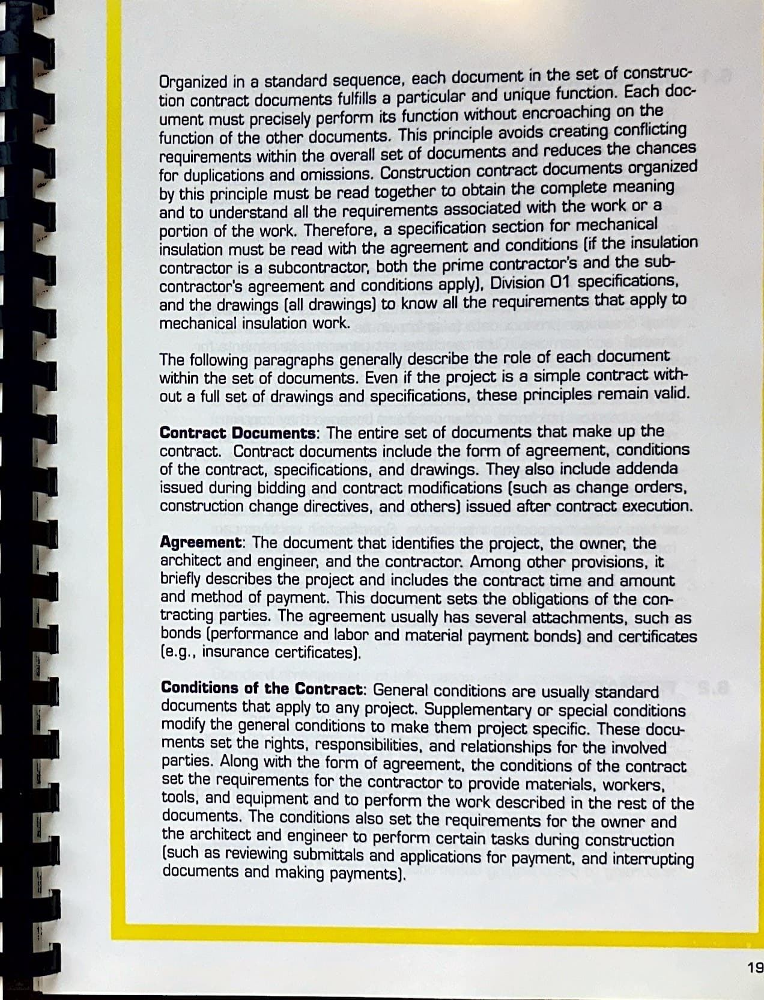
Organized in a standard sequence, each document in the set of construc- bon contract documents fulfills a particular and unique function.
Each doc- ument must precisely perform its function without encroaching on the function of the other documents.
This principle avoids creating conflicting requirements within the overall set of documents and reduces the chances for duplications and omissions.
Construction contract documents organized by this principle must be read together to obtain the complete meaning and to understand all the requirements associated with the work or a portion of the work.
Therefore.
a specification section for mechanical insulation must be read with the agreement and conditions (if the insulation contractor is a subcontractor.
both the prime contractor's and the sub- contractor's agreement and conditions apply), Division 01 specifications, and the drawings (all drawings) to know all the requirements that apply to mechanical insulation work.
The following paragraphs generally describe the role of each document within the set of documents.
Even if the project is a simple contract with- out a full set of drawings and specifications, these principles remain valid.
Contract Documents: The entire set of documents that make up the contract.
Contract documents include the form of agreement, conditions of the contract, specifications, and drawings.
They also include addenda issued during bidding and contract modifications (such as change orders, construction change directives, and others) issued after contract execuion.
Agreement: The document that identifies the project.
the owner, the architect and engineer, and the contractor.
Among other provisions, it briefly describes the project and includes the contract time and amount and method of payment.
This document sets the obligations of the con- tracting parties.
The agreement usually has several atachments, such as bonds (performance and labor and material payment bonds) and certificates (e.g., insurance certificates).
Conditions of the Contract: General conditions are usually standard documents that apply to any project.
Supplementary or special conditions modify the general conditions to make them project specific.
These docu- ments set the rights, responsibilities.
and relationships for the involved parties.
Along with the form of agreement.
the conditions of the contract set the requirements for the contractor to provide materials.
workers, tools, and equipment and to perform the work described in the rest of the documents.
The conditions also set the requirements for the owner and the architect and engineer to perform certain tasks during construction (such as reviewing submittals and applications for payment, and interrupting documents and making payments).
19
Page 209
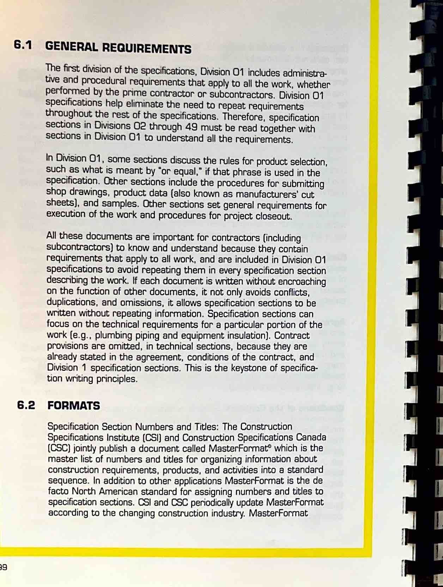
6.1 6.2 GENERAL REQUIREMENTS The first division of the specifications, Dmsion 01 includes administra- tive and procedural requirements that apply to all the work, whether performed by the prime contractor or subcontractors.
Division 01 specifications help eliminate the need to repeat requirements throughout the rest of the specifications.
Therefore, specification sections in Divisions 02 through 49 must be read together with sections in Division 01 to understand all the requirements.
In Division 01, some sections discuss the mules for product selection, such as what is meant by 'or equal," if that phrase is used in the specification.
Other sections include the procedures for submitting shop drawings, product data (also known as manufacturers' cut sheets), and samples.
Other sections set general requirements for execution of the work and procedures for project closeout.
All these documents are important for contractors (including subcontractors) to know and understand because they contain requirements that apply to all work, and are included in Division 01 specifications to avoid repeating them in every specification section describing the work.
If each document is wrun without encroaching on the function of other documents, it not only avoids conflicts.
duplications, and omissions, it allows specification sections to be writen without repeating information.
Specification sections can focus on the technical requirements for a particular portion of the work (e.g., plumbing piping and equipment insulation).
Contract provisions are omitted, in technical sections, because they are already stated in the agreement, conditions of the contract.
and Division 1 specification sections.
This is the keystone of specifica- tion writing principles.
FORMATS Specification Section Numbers and Titles: The Construction Specifications Institute (CSI) and Construction Specifications Canada (CSC) jointly publish a document called MasterFormat0 which is the master list of numbers and titles for organizing information about construction requirements, products, and activities into a standard sequence.
In addition to other applications MasterFormat is the de facto North American standard for assigning numbers and titles to specification sections.
CSI and CSC periodically update MasterFormat according to the changing construction industry.
MasterFormat
Page 210
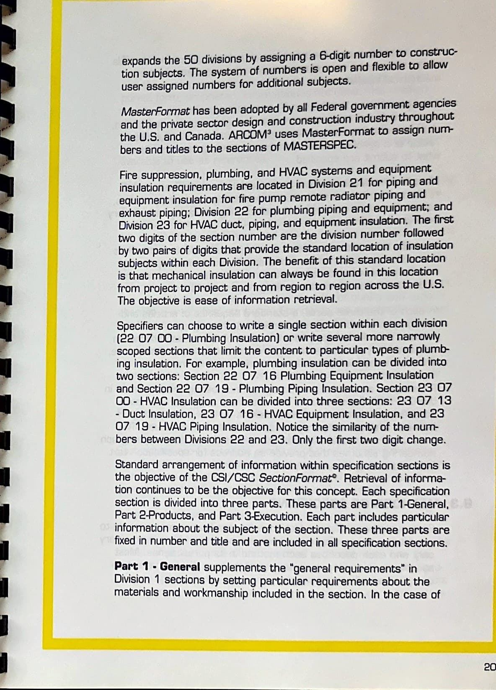
expands the 50 divisions by assigning a 6-digit number to construc- tion subjects.
The system of numbers is open and flexible to allow user assigned numbers for additional subjects.
MasterFormat has been adopted by all Federal government agencies and the private sector design and construction industry throughout the U.S.
and Canada.
ARCOM3 uses MasterFormat to assign num- bers and titles to the sections of MASTERSPEC.
Fire suppression, plumbing.
and HVAC systems and equipment insulation requirements are located in Division 21 for piping and equipment insulation for fire pump remote radiator piping and exhaust piping; Division 22 for plumbing piping and equipment; and Division 23 for HVAC duct, piping, and equipment insulation.
The first two digits of the section number are the division number followed by two pairs of digits that provide the standard location of insulation subjects within each Division.
The benefit of this standard location is that mechanical insulation can always be found in this location from project to project and from region to region across the U.S.
The objective is ease of information retrieval.
Specifiers can choose to write a single section within each division (22 07 00 - Plumbing Insulation) or write several more narrowly scoped sections that limit the content to particular types of ing insulation.
For example, plumbing insulation can be divided into two sections: Section 22 07 16 Plumbing Equipment Insulation and Section 22 07 19 - Plumbing Piping Insulation.
Section 23 07 00 - HVAC Insulation can be divided into three sections: 23 07 13 - Duct Insulation, 23 07 16 - HVAC Equipment Insulation.
and 23 07 19 - HVAC Piping Insulation.
Notice the similarity of the num- bers between Divisions 22 and 23.
Only the first buo digit change.
Standard arrangement of information within specification sections is the objective of the CSI/CSC SectionFormate.
Retrieval of informa- tion continues to be the objective for this concept.
Each specification section is divided into three parts.
These parts are Part IGeneral, Part 2-Products, and Part a-Execution.
Each part includes particular information about the subject of the section.
These three parts are fixed in number and title and are included in all specification sections.
Part 1 General supplements the "general requirements" in Division 1 sections by setting particular requirements about the materials and workmanship included in the section.
In the case of 20
Page 211
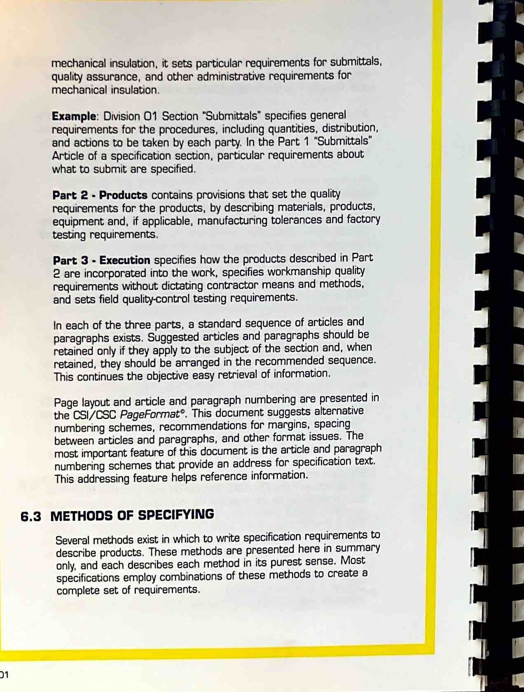
mechanical insulation.
it sets particular requirements for submus, quality assurance, and other administrative requirements for mechanical insulation.
Example: Division 01 Section "Submittals" specifies general requirements for the procedures, including quantities, distribution, and actions to be taken by each party, In the Part 1 "Submittals" Article of a specification section.
particular requirements about what to submit are specified.
Part 2 Products contains provisions that set the quality requirements for the products, by describing materials, products, equipment and, if applicable, manufacturing tolerances and factory testing requirements.
Part 3 • Execution specifies how the products described in Part 2 are incorporated into the work, specifies workmanship quality requirements without dictating contractor means and methods, and sets field quality-control testing requirements.
In each of the three parts, a standard sequence of articles and paragraphs exists.
Suggested articles and paragraphs should be retained only if they apply to the subject of the section and, when retained, they should be arranged in the recommended sequence.
This continues the objective easy retrieval of information.
Page layout and article and paragraph numbering are presented in the CSI/CSC PageFormat0.
This document suggests alternative numbering schemes.
recommendations for margins, spacing bebueen articles and paragraphs, and other format issues.
The most important feature of this document is the arucle and paragraph numbering schemes that provide an address for specification text.
This addressing feature helps reference information.
6.3 METHODS OF SPECIFYING Several methods exist in which to write specification requirements to describe products.
These methods are presented here in summary only.
and each describes each method in its purest sense.
Most specifications employ combinations of these methods to create a complete set of requirements.
Page 212
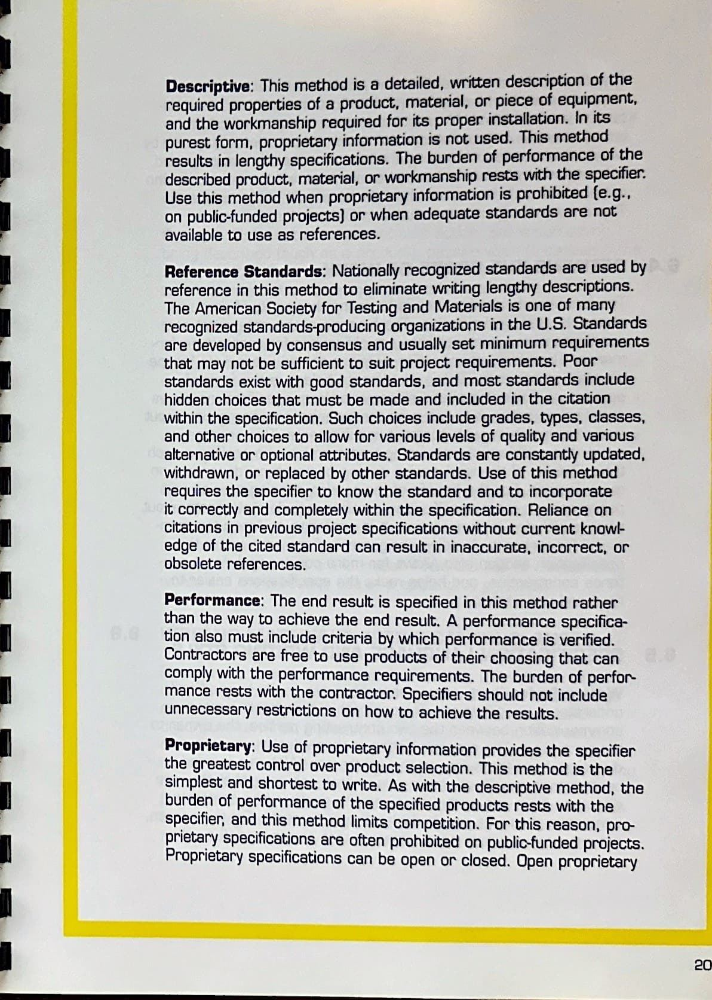
Descriptive: This method is a detailed, written description of the required properties of a product, material, or piece of equipment, and the workmanship required for its proper installation.
In its purest form, proprietary information is not used.
This method results in lengthy specifications.
The burden of performance of the described product.
material, or workmanship rests with tie specifier.
Use this method when proprietary information is prohibited (e.g., on public-funded projects) or when adequate standards are not available to use as references.
Reference Standards: Nationally recognized standards are used by reference in this method to eliminate writing lengthy descriptions.
The American Society for Testing and Materials is one of many recognized standards-producing organizations in the U.S.
Standards are developed by consensus and usually set minimum requirements that may not be sufficient to suit project requirements.
Poor standards exist with good standards.
and most standards include hidden choices that must be made and included in the citation within the specification.
Such choices include grades, types, classes, and other choices to allow for various levels of qualiby' and various alternative or optional atributes.
Standards are constantly updated, withdrawn, or replaced by other standards.
Use of this method requires the specifier to know the standard and to incorporate it correctly and completely within the specification.
Reliance on citations in previous project specifications without current knowl- edge of the cited standard can result in inaccurate, incorrect, or obsolete references.
Performance: The end result is specified in this method rather than the way to achieve the end result.
A performance specifica- tion also must include criteria by which performance is verified.
Contractors are free to use products of their choosing that can comply with the performance requirements.
The burden of perfor- mance rests with the contractor.
Specifiers should not include unnecessary restrictions on how to achieve the results.
Proprietary: Use of proprietary information provides the specifier the greatest control over product selection.
This method is the simplest and shortest to write.
As with the descriptive method, the burden of performance of the specified products rests with the specifier, and this method limits competition.
For this reason, pro- prietary specifications are often prohibited on public-funded projects.
Proprietary specifications can be open or closed.
Open proprietary 20
Page 213
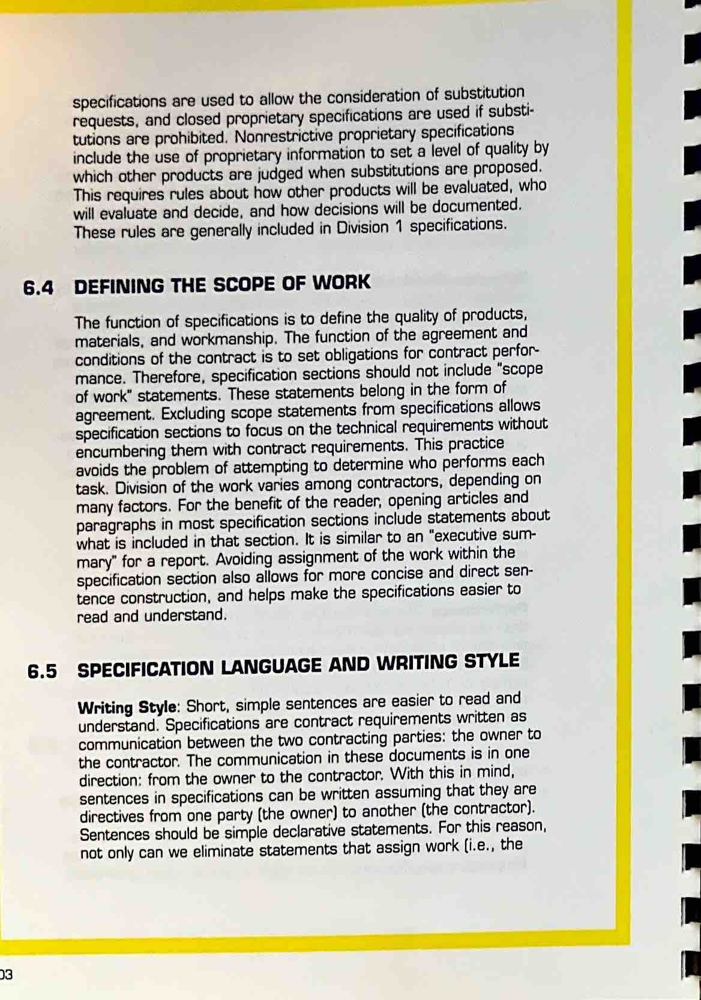
6.4 6.5 specifications are used to allow the consideration of substitution requests.
and closed propmetary specifications are used if substi- Wtions are prohibited.
Nonrestncttve proprietary specifications Include the use of proprietary information to set a level of quality by which other products are Judged when substitutions are proposed.
This requires rules about how other products Will be evaluated, who will evaluate and decide, and how decisions Will be documented.
These rules are generally Included in Division 1 specifications.
DEFINING THE SCOPE OF WORK The function of specifications is to define the quality of products, materials.
and workmanship.
The function of the agreement and conditions of the contract is to set obligations for contract perfor- mance.
Therefore, specification sections should not include "scope of work" statements.
These statements belong in the form of agreement.
Excluding scope statements from specifications allows specification sections to focus on the technical requirements without encumbemng them With contract requirements.
This practice avoids the problem of atemptlng to determine who performs each task.
DMsion of the work varies among contractors, depending on many factors.
For the benefit of the reader, opening articles and paragraphs in most specification sections include statements about what is included in that section.
It is similar to an "executive sum- mary- for a report.
Avoiding assignment of the work within the specification section also allows for more concise and direct sen- tence construction, and helps make the specifications easier to read and understand.
SPECIFICATION LANGUAGE AND WRITING STYLE Writing Style: Short, simple sentences are easier to read and understand.
Specifications are contract requirements written as communication between the two contracting parties: the owner to the contractor.
The communication in these documents is in one direction: from the owner to the contractor.
With this in mind, sentences in specifications can be written assuming that they are directives from one party (the owner) to another (the contractor).
Sentences should be simple declaraüve statements.
For this reason, not only can we eliminate statements that assign work (i.e., the
Page 214
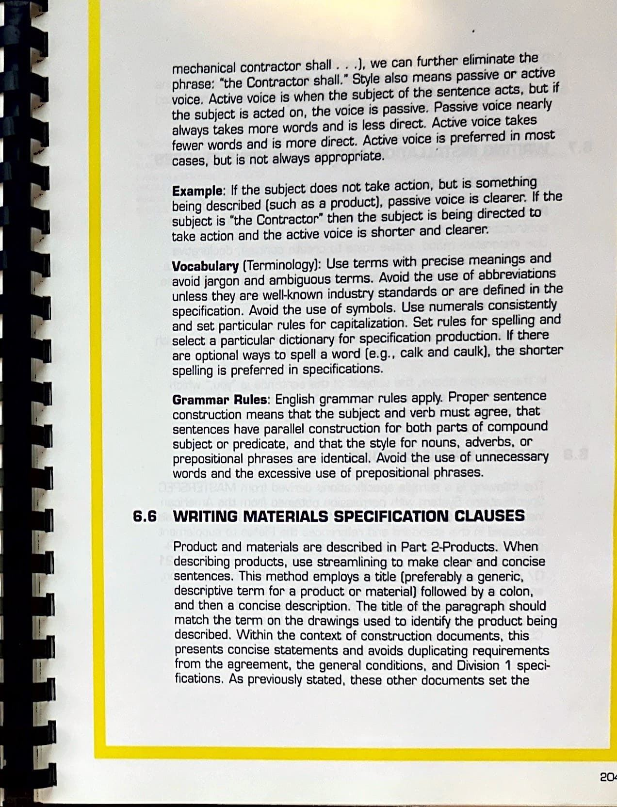
6.6 mechanical contractor shall ..
we can further eliminate the phrase: "the Contractor shall." Style also means passive or active voice.
Active voice is when the subject of the sentence acts, but if the subject is acted on, the voice is passive.
Passive voice nearly always takes more words and is less direct.
Active voice takes fewer words and is more direct.
Active voice is preferred in most cases, but is not always appropriate.
Example: If the subject does not take action, but is something being described (such as a product), passive voice is clearer.
If the subject is "the Contractor" then the subject is being directed to take action and the active voice is shorter and clearer.
Vocabulary (Terminology): Use terms with precise meanings and avoid jargon and ambiguous terms.
Avoid the use of abbreviations unless they are well-known industry standards or are defined in the specification.
Avoid the use of symbols.
LJse numerals consistently and set particular rules for captalization.
Set rules for spelling and select a particular dictionary for specification production.
If there are optional ways to spell a word (e.g., calk and caulk), the shorter spelling is preferred in specifications.
Grammar Rules: English grammar rules apply.
Proper sentence construction means that the subject and verb must agree, that sentences have parallel construction for both parts of compound subject or predicate, and that the style for nouns, adverbs, or prepositional phrases are identical.
Avoid the use of unnecessary words and the excessive use of prepositional phrases.
WRITING MATERIALS SPECIFICATION CLAUSES Product and materials are described in Part 2-Products.
When describing products, use streamlining to make clear and concise sentences.
This method employs a title (preferably a generic, descriptive term for a product or material) followed by a colon, and then a concise description.
The title of the paragraph should match the term on the drawings used to identify the product being described.
Within the context of construction documents, this presents concise statements and avoids duplicating requirements from the agreement, the general conditions.
and Division 1 speci- fications.
As previously stated.
these other documents set the
Page 215
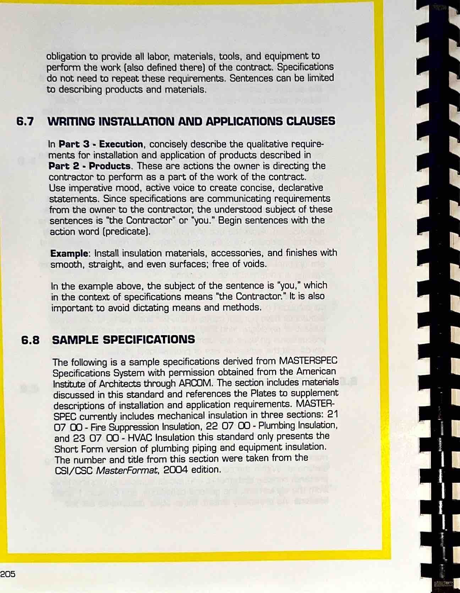
6.7 6.8 205 obligation to provide all labor, materials, tools, and equipment to perform the work (also defined there) of the contract.
Specifications do not need to repeat these requirements.
Sentences can be limited to describing products and materials.
WRmNG INSTALLATION AND APPLICATIONS CLAUSES In Part 3 • Execution, concisely describe the qualitative require- ments for installation and application of products described in Part 2 • Products.
These are actions the owner is directing the contractor to perform as a part of the work of the contract.
Use imperative mood, active voice to create concise, declarative statements.
Since specifications are communicating requirements from the owner to the contractor, the understood subject of these sentences is "the Contractor" or "you." Begin sentences with the action word (predicate).
Example: Install insulation materials, accessories, and finishes with smooth, straight, and even surfaces; free of voids.
In the example above, the subject of the sentence is "you." which in the context of specifications means "the Contractor." It is also important to avoid dictating means and methods.
SAMPLE SPECIFICATIONS The following is a sample specifications derived from MASTERSPEC Specifications System with permission obtained from the American Institute of Architects through ARCOM.
The section includes materials discussed in this standard and references the Plates to supplement descriptions of installation and application requirements.
MASTER- SPEC currently includes mechanical insulation in three sections: 21 07 00 - fire Suppression Insulation, 22 07 00 - Plumbing Insulation, and 23 07 00 - HVAC Insulation this standard only presents the Short Form version of plumbing piping and equipment insulation.
The number and title from this section were taken from the CSVCSC MasterFormat, 2004 edition.
Page 216
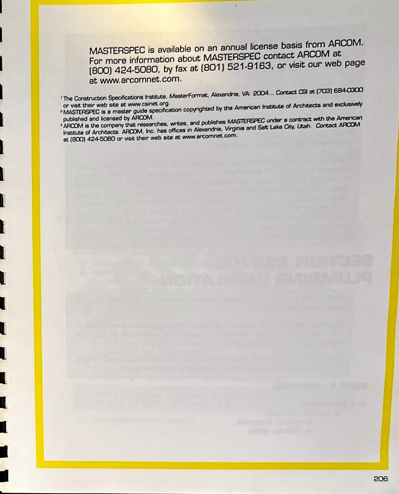
MASTERSPEC is available on an annual license basis from ARCOM.
For more information about MASTERSPEC contact ARCOM at (800) 424-5080, by fax at (801) 521-9163, or visit our web page at www.arcomnet.com.
'The Q)nstructon Specifications InstR-uta.
MasterF«rne Alexan&ta.
VA; Co•tact (703) 68"-æm or Vist thejr web sta at cs•net org MASTER9EC a master guide spectficaoon coppghted by the Amencan InstJtute of Archræcts and pubhshed and licensed by ARCO&I ,ARmtv1 IS the company Ülat researches.
Mites.
and publishes unda• a cmo-øct tie Instaute of Architects Amavf.
hc.
has offceg jn AJexandna.
Vona and Sat Lake Cty LRah.
ot (800) 424-5080 or their web yte at arcomnet.com.
206
Page 217
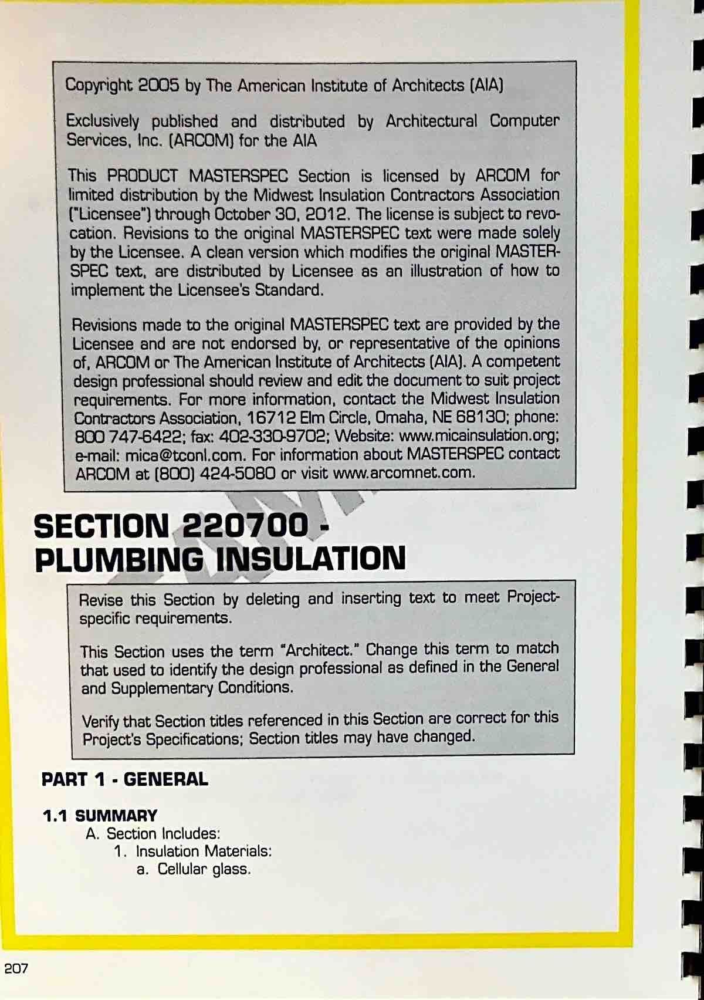
Copyöght 2005 by The American Institute of Architects (AIA) Exclusively published and distributed by Architectural Computer Services, Inc.
(ARCOM) for the AIA This PRODUCT MASTERSPEC Section is licensed by ARCOM for limited distribution by the Midwest Insulation Contractors Association ("Licensee") through October 30, 2012.
The license is subject to revo- cation.
Revisions to the original MASTERSPEC text were made solely by the Licensee.
A clean version which modifies the original MASTER- SPEC text, are distributed by Licensee as an illustration of how to implement the Licensee's Standard.
Revisions made to the original MASTERSPEC text are provided by the Licensee and are not endorsed by.
or representative of the opinions of, ARCOM or The American Institute of Architects (AIA).
A competent design professional should review and edit the document to suit project requirements.
For more information, contact the Midwest Insulation Conmactors Association, 16712 Elm Circle, Omaha.
NE 68130; phone: BOO 747G422; fax: 402-3309702; Website: wmv.micainsulation.org; e-mail: mica@tconl.com.
For information about MASTERSPEC contact ARCOM at (800) 424-5080 or visit www.arcomnet.com.
SECTION 220700 - PLUMBING INSULATION Revise this Section by deleting and inserting text to meet Project- specific requirements.
This Section uses the term "Architect." Change this term to match that used to identify the design professional as defined in the General and Supplementary Conditions.
Verify that Section titles referenced in this Section are correct for this Project's Specifications; Section titles may have changed.
PART 1 - GENERAL 1.1 SUMMARY A.
Section Includes: 1.
Insulation Materials: a.
Cellular glass.
207
Page 218
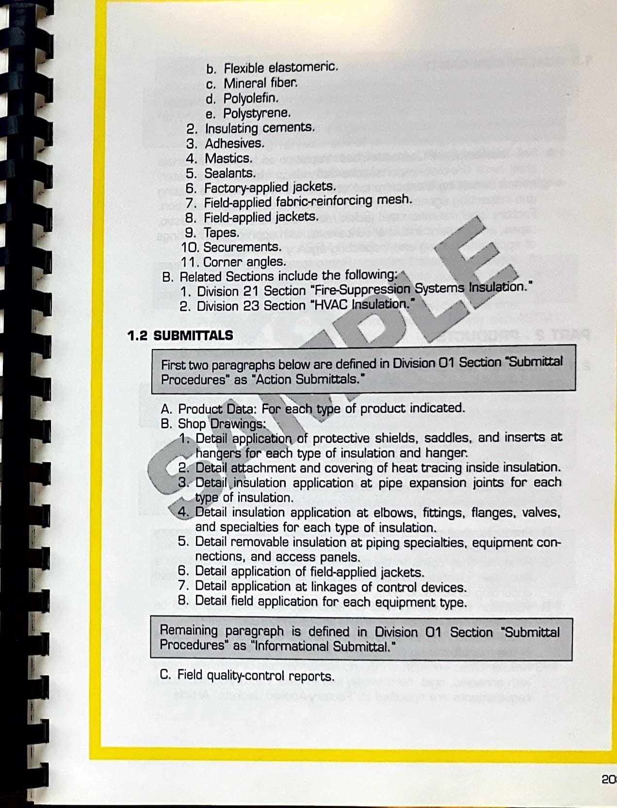
b.
Flexible elastomeric.
c.
Mineral fiber.
d.
Polyolefin.
e.
Polystyrene.
Insulating cements.
2.
Adhesives.
3.
Mastics.
4.
Sealants.
5.
Factory-applied jackets.
6.
Field-applied fabric-reinforcing mesh.
7.
Field-applied jackets.
8.
9.
Tapes.
10.
Securements.
11.
Corner angles.
B.
Related Sections include the 1.
Division 21 Section "Fire-Suppression Systems Insulation.• 2.
Division 23 Section "HVAC Insulation.
• 1.2 SUBMITTALS First two paragraphs below are defined in Division 01 Section Submit.al Procedures" as "Action Submittals.' A.
Product Data: For eac type of product indicated.
B.
Shop Drawings:y 1.
Detail applicatiomo protective shields, saddles, and inserts at hangers for each type of insulation and hanger.
2.4Detail attachment and covering of heat tracing inside insulation.
Detail einsulation application at pipe expansion joints for each type of insulation.
CUDetail insulation application at elbows, finngs, flanges, valves, and specialties for each type of insulation.
5.
Detail removable insulation at piping specialties, equipment con- nections, and access panels.
6.
Detail application of field-applied jackets.
7.
Detail application at linkages of control devices.
8.
Detail field application for each equipment type.
Remaining paragraph is defined in Division 01 Section "Submittal Procedures" as "Informational Submittal." C.
Field quality-control reports.
20
Page 219
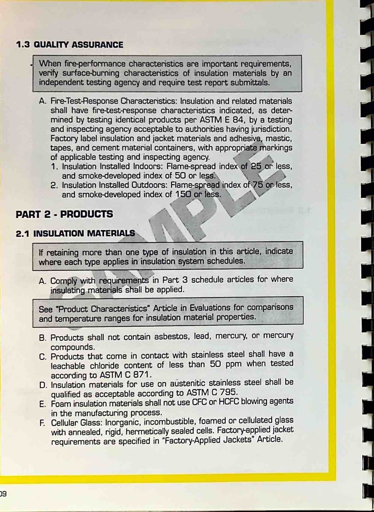
1.3 QUALITY ASSURANCE When fire-performance characteristics are important requirements, verify surface-burning characteristics of insulation materials by an independent testing agency and require test report submittals.
A.
FireTest-Response Characteristics: Insulation and related materials shall have fire-test-response characteristics indicated, as deter- mined by testing identical products per ASTM E 84, by a testing and inspecting agency acceptable to authorities having jurisdiction.
Factory label insulation and jacket materials and adhesive, mastic, tapes, and cement material containers, with appropriate markings of applicable testing and inspecting agency.
I.
Insulation Installed Indoors: Flame-spread indek•.of 25 or less, and smoke-developed index of 50 or lessi\ < 2.
Insulation Installed Outdoors: Flame-spread index ofr 5 or less, and smoke-developed index of 150 or jess.
PART 2 • PRODUCTS 2.1 INSULATION MATERIALS If retaining more than one type of insulation in this article, indicate where each type applies in insulation system schedules.
in Part 3 schedule articles for where A.
Comply with requireme Yisulating materials shall be applied.
See "Product Characteristics" Article in Evaluations for comparisons and temperature ranges for insulation material properties.
B.
Products shall not contain asbestos, lead, mercury; or mercury compounds.
C.
Products that come in contact with stainless steel shall have a leachable chloride content of less than 50 ppm when tested according to ASTM C 871.
D.
Insulation materials for use on austenitic stainless steel shall be qualified as acceptable according to ASTM C 795.
E.
Foam insulation materials shall not use CFC or HCFC blowing agents in the manufacturing process.
F.
Cellular Glass: Inorganic, incombustible, foamed or cellulated glass with annealed, rigid, hermetically sealed cells.
Factory-applied jacket requirements are specified in "Factory-Applied Jackets" Article.
Page 220
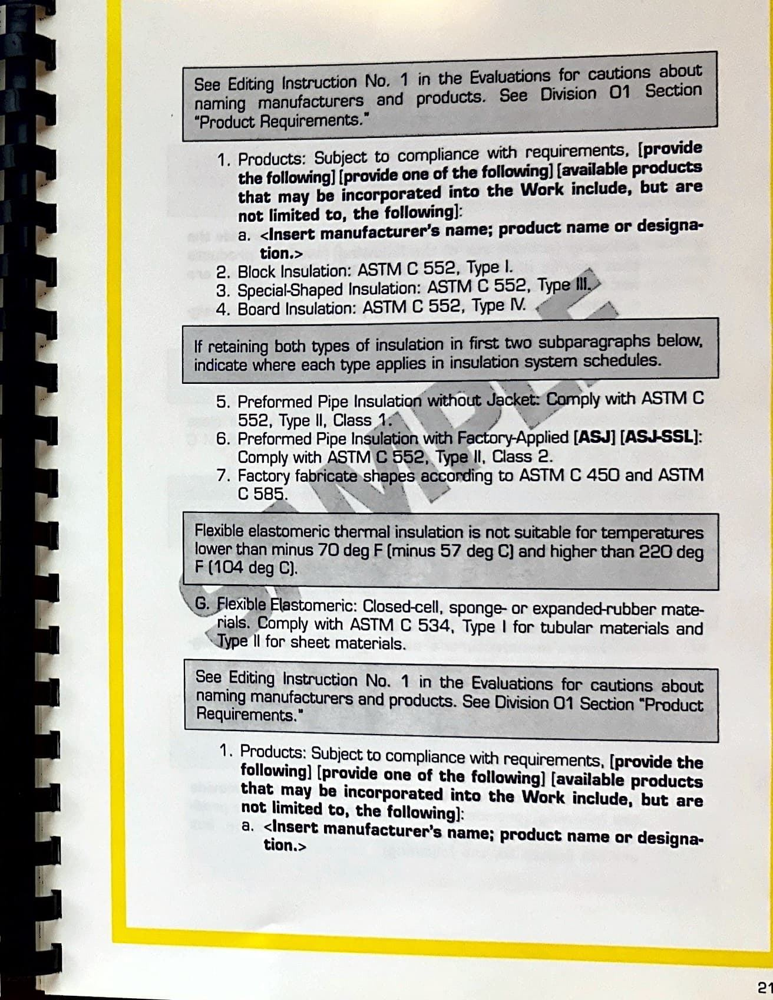
16 See Editing Instruction No.
1 in the Evaluations for cautions about naming manufacturers and products.
See Division 01 Section "Product Requirements.' 1.
Products: Subject to compliance with requirements, [provide the follovingl [provide one of the following] [available products that may be incorporated into the Work include, but are not limited to, the following]: a.
<lnsert manufacturer's name; product name or designa• tion.> 2.
Block Insulation: ASTM C 552, Type l.
3.
Special-Shaped Insulation: ASTM C 552, Type 4.
Board Insulat.ion: ASTM C 552, Type M If retaining both types of insulation in first two subparagraphs below, indicate where each type applies in insulation system schedules.
5.
Preformed Pipe Insulation with6ut Jacket: Cornply with ASTM C 552, Type II, Class 6.
Preformed Pipe Insulation with Factory-Applied [AeJl [ASJ-SSLI: Comply with ASTM C 552; Type II, Class 2.
7.
Factory fabricate shapes according to ASTM C 450 and ASTM c 585, Flexible elastomeric thermal insulation is not suitable for temperatures lower than minus 70 deg F (minus 57 deg C) and higher tran 220 deg F (104 deg C).
G.
lekible Elastomeric: Closed-cell, spong+ or expanded-rubber mate- rials.
Comply with ASTM C 534, Type I for tubular materials and e II for sheet materials.
See Editing Instruction No.
1 in the Evaluations for cauüons about naming manufacturers and products.
See Division 01 Section •Product Requirements." 1 .
Products: Subject to compliance with requiremenÄ (provide the following) [provide one of the followingl [available products that may be incorporated into the Work include, but are not limited to, the following): a.
<lnsert manufacturer's name; product name or designa- tion.>
Page 221
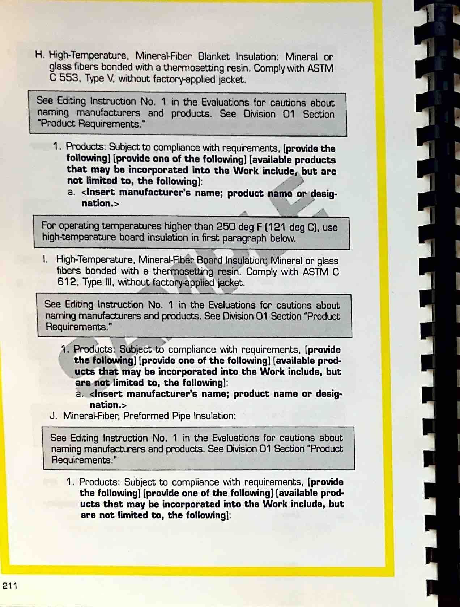
H.
High-Temperature, Mineral-Fiber Blanket Insulation: Mineral or glass fibers bonded With a thermoseting resin.
Comply with ASTM C 553, Type V.
without factory-applied jacket.
See Editing Instruction No.
1 in the Evaluations for cautions about naming manufacturers and products.
See Division 01 Section -Product Requirements.
• 1.
Produ&: Subject to compliance With requirements, [provide the following) (provide one of the following] [available products that may be incorporated into the Work include, but are not limited to, the following): a.
<lnsert manufacturer's name; product name or desig- nation.> For operating temperatures higher than 250 deg F (121 deg C), use high-temperature board insulation in first paragraph below.
l.
High-Temperawre, Mineral-Fiber Board Insulation; Mineral or glass fibers bonded with a thermosewng resin.
Comply with ASTM C 612, Type Ill.
without factory-applied jacket.
See Editing Insu•uction No.
1 in the Evaluations for cautions about naming manufacturers and products.
See Division 01 Section "Product Requirements." Products: Su€ject to compliance with requirements.
(provide the following] [provide one of the following] (available prod- ucts that may be incorporated into the Work include, but are not limited to, the following) ae<lnsert manufacturer's name; product name or desig- nation.> J.
Mineral-Fiber, Preformed Pipe Insulation: See Editing Instruction No.
1 in the Evaluations for cautions about naming manufacturers and products.
See Division 01 Section "Product Requirements." 1.
Products: Subject to compliance with requirements, [provide the following) [provide one of the followingl [available prod- ucts that may be incorporated into the Work include, but are not limited to, the following): 211
Page 222
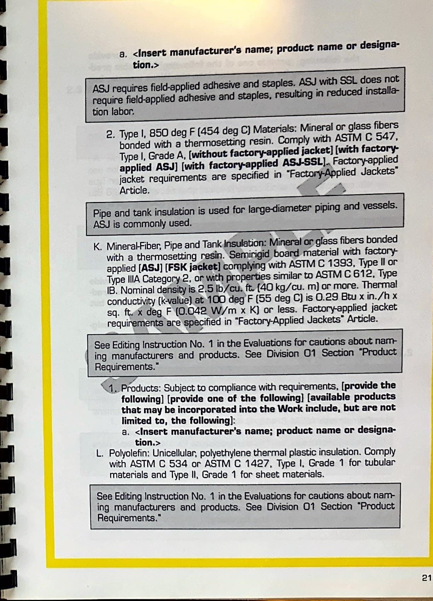
a.
<lnsert manufacturer's name; product name or designa- tion.> ASJ requires field-applied adhesögte and staples.
ASJ with SSL does not require field-applied adhesive and staples, result.ing in reduced installa- tion labor.
2.
Type l, 850 deg F (454 deg C) Materials: Mineral or glass fibers bonded with a thermosetting resin.
Comply wth ASTM C 547, Type l, Grade A, [without factory-applied jacketl [with factory- applied ASJI [with factory-applied ASJ-SSLVFactory-applied jacket requirements are specified in •Factojy-Applied Jackets• Article.
Pipe and tank insulation is used for large-diameter piping and vessels.
ASJ is commonly used.
K.
Mineral-fiber, Pipe and Tank Insulabon: Mineral or grass fibers bonded with a thermosetting resin.
Semirigid board material with factory applied [ASJ] [FSK jacketl complying with ASTM C 1393, Type II or Type IIIA Category 2, or with properties similar to ASTM C 612, Type 1B.
Nominal density is 2.5 lb/ct-j, ft.
(40 kg/cu.
m) or more.
Thermal conductivity (k-value) at 100 degiF (55 deg C) is 0.29 Btu x in./h x sq.
ft.
x deg F (0.042 W/m x K) or less.
Factory-applied jacket requirements are specified in "Factory-Applied Jackets" Article.
See Editing Instruction No.
1 in the Evaluations for caubons about narry ing manufacturers and products.
See Division 01 Section -Product Requirements: Products: Subject to compliance with requirements, [provide the following] [provide one of the following] [available products that may be incorporated into the Work include, but are not limited to, the following]: a.
<lnsert manufacturer's name; product name or designa• tion.> L.
Polyolefin: Unicellular, polyethylene thermal plastic insulation.
Comply with ASTM C 534 or ASTM C 1427.
Type l.
Grade 1 for tubular materials and Type II, Grade 1 for sheet materials.
See Editing Instruction No.
1 in the Evaluations for cautions about ing manufacturers and products.
See Division 01 Section Troduct Requirements." 21
Page 223
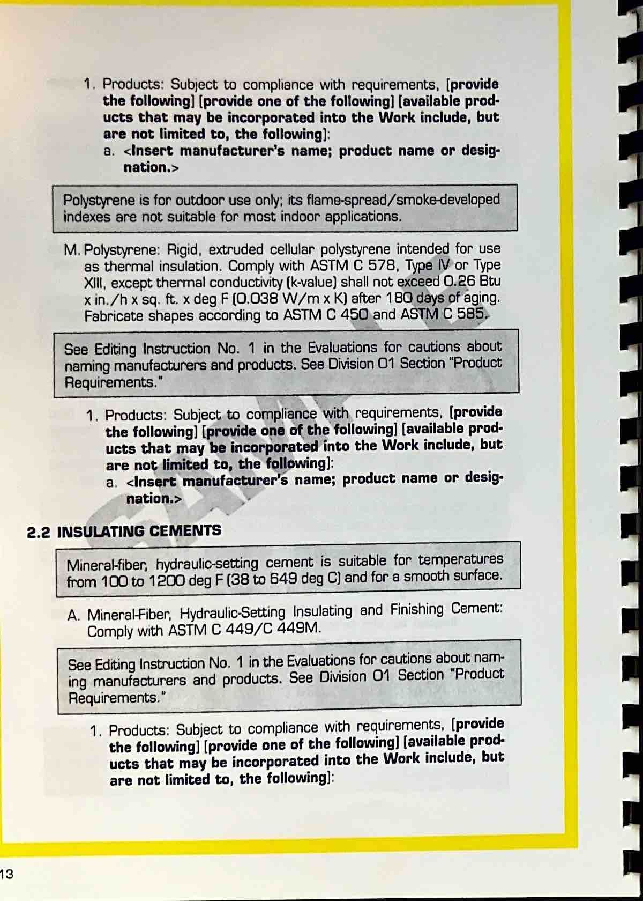
1.
Products: Subject to compliance with requirements.
[provide the following] (provide one of the following) [available prod- ucts that may be incorporated into the Work include, but are not limited to, the following]: a.
<lnsert manufacturer's name; product name or desig- nation.> Polystyrene is for outdoor use only; its flame-spread/smoke-developed indexes are not suitable for most indoor applications.
M, Polystyrene: Rigidi extruded cellular polystyrene intended for use as thermal insulation.
Comply with ASTM C 578.
Type IVor Type XIII, except thermal conductivity (k-value) shall not exceed 0.26 Btu x in./h x sq.
ft.
x deg F (0.038 W/m x K) after 180 days ofåging.
Fabricate shapes according to ASTM C 450 and ASTM C See Editing Insü-uction No.
1 in the Evaluations for cautions about naming manufacturers and producÄ See Division 01 Section "Product Requirements." 1.
Products: Subject to compliance with requirements, [provide the following) [provide one of the followingl [available prod- ucts that may be incorporated into the Work include, but are not limited to, the following]: a.
<lnsert manufacturer's name; product name or desig- nation.> 2.2 INSULATING CEMENTS Mineral-fiber, hydraulic-seting cement is suitable for temperatures from 100 to 1200 deg F (3B to 649 deg C) and for a smooth surface, A.
Mineral-Fiber, Hydraulic-Setüng Insulating and Finishing Cement: Comply with ASTM C 449/C 449M.
See Editing Instruction No.
1 in the Evaluations for cautions about nam- ing manufacturers and products.
See Division 01 Section "Product Requirements.
" 1.
Products: Subject to compliance with requirements, [provide the following] [provide one of the following] [available prod- ucts that may be incorporated into the Work include, but are not limited to, the following]: 13
Page 224
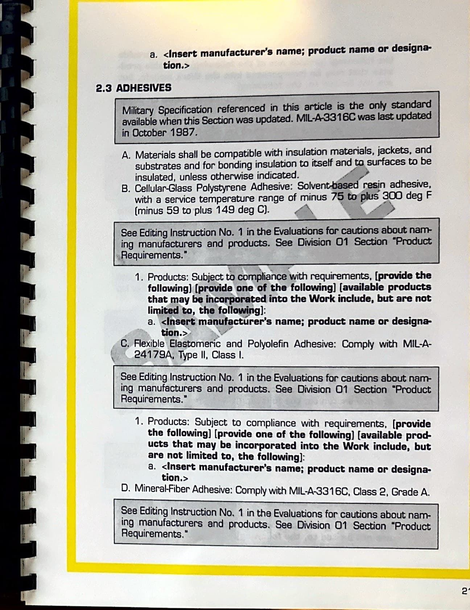
a.
<lnsert manufacturer's name; product name or designa- tion.> 2.3 ADHESIVES Military Specification referenced in this article is the only standard available when this Section was updated.
ML-A-3316C was last updated in October 1987.
A.
Materials shall be compatible with insulation materials, jackets, and substrates and for bonding insulation to itself and to surfaces to be insulated, unless otherwise indicated.
B.
Cellular-Glass Polystyrene Adhesive: Solvent-based resin adhesive, with a service temperature range of minus 75 to plus' 300 deg F (minus 59 to plus 149 deg C).
See Editing Instruction No.
1 in the Evaluations for cat-mons about nan-y ing manufacturers and products.
See Division 01 Sect.ion "Product Requirements." 1 .
Products: Subject to compliance with requirements, [provide the following] (provide one of the following] [available products that may be incorporated into the Work include, but are not limited to, the following]: a.
<lnsert manufacturer's name; product name or desigrw C Flexible Elastomeric and Polyolefin Adhesive: Comply with MIL-A- 24179A, Type II, Class l.
See Editing Instruction No.
1 in the Evaluations for cautions about narn- ing manufacturers and products.
See Division 01 Section •Product Requirements." 1.
Products: Subject to compliance with requirements, [provide the following] [provide one of the following] [available prod- ucts that may be incorporated into the Work include, but are not limited to, the following]: a.
<lnsert manufacturer's name; product name or designa- tion.> D.
Mineral-Fiber Adhesive: Comply with MIL-A-3316C, Class 2, Grade A.
See Editing Instruction No, 1 in the Evaluations for cautions about nam- ing manufacturers and products.
See Division 01 Section "Product Requirements." 2'
Page 225
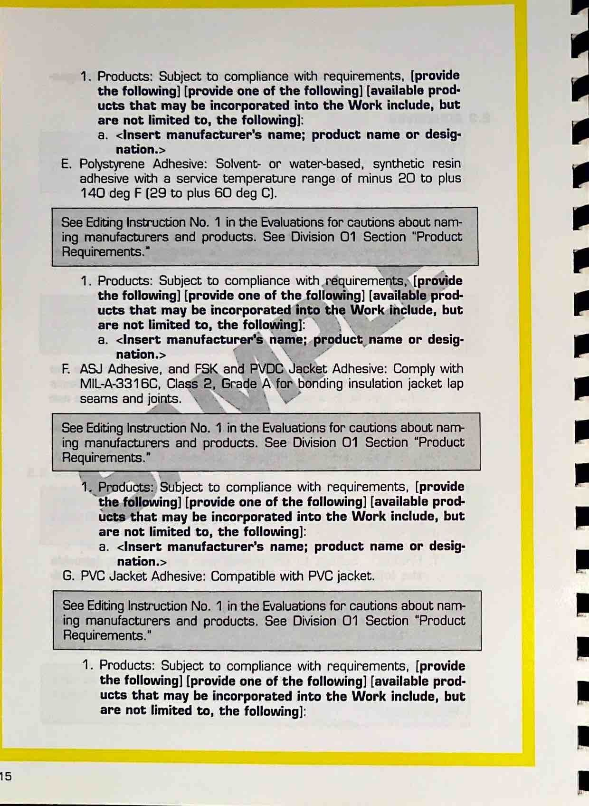
1.
Products: Subject to compliance with requirements, (provide the following] [provide one of the following] [available prod- ucts that may be incorporated into the Work include, but are not limited to, the following]: a.
<lnsert manufacturer's name; product name or desig• nation.> E.
Polystyrene Adhesive: Solvent- or water-based, synthetic resin adhesive with a service temperature range of minus 20 to plus 140 deg F (29 to plus 60 deg C).
See Editing Instruction No.
1 in the Evaluations for cautions about nam- ing manufacturers and products.
See Division 01 Section "Product Requirements.- I.
Products: Subject to compliance with requirements, [provide the following] [provide one of the following] [available prod- ucts that may be incorporated into the Work include, but are not limited to, the following]: a.
<lnsert manufacturer's name; productvname or desig• nation.> E ASJ Adhesive, and FSK and PVDC acket Adhesive: Comply with MIL-A-331 BC, Class 2, Grade A for bonding insulation jacket lap seams and joints.
See Editing Instruction No.
1 in the Evaluations for cautions about nam- ing manufacturers and products.
See Division 01 Section "Product Requirements." 1 Products: Subject to compliance with requirements, [provide the following] [provide one of the following] [available prod- ucts that may be incorporated into the Work include, but are not limited to, the following]: a.
<lnsert manufacturer's name; product name or desig• nation.> G.
PVC Jacket Adhesive: Compatible with PVC jacket.
See Editing Instruction No.
1 in the Evaluations for cautions about nam- ing manufacturers and products.
See Division 01 Section "Product Requirements.
" 1.
Products: Subject to compliance with requirements, [provide the following] [provide one of the following] [available prod- ucts that may be incorporated into the Work include, but are not limited to, the following]: 15
Page 226
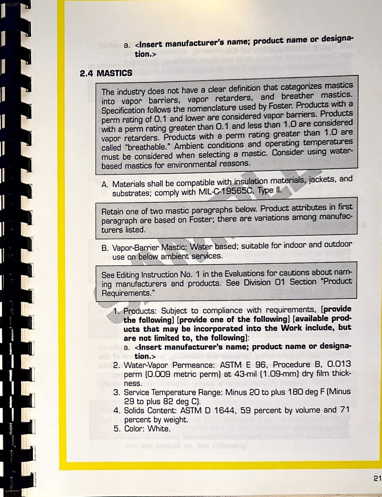
a.
<lnsert manufacturer's name; product name or designa- tion.> 2.4 MASTICS The industry does not have a clear definition that categorizes mastics into vapor barriers, vapor retarders, and breather mastics.
Specification follows the nomenclature used by Foster.
Products with a perm rating of 0.1 and lower are considered vapor barriers.
Products with a perm rating greater than 0.1 and less than 1 .O are considered vapor retarders.
Products with a perm rating greater than 1.0 are called "breathable." Ambient conditions and operating temperatures must be considered when selecting a mastic.
Consider using water- based mastics for environmental reasons.
A.
Materials shall be compatible with insulation materials, jackets, and substrates; comply with MILOI 9565C, Type II.
Retain one of two mastic paragraphs below.
Product attributes in first paragraph are based on Foster; there are variations among manufac- turers listed.
B.
Vapor-Barrier Mastic: Water based; suitable for indoor and outdoor use on below ambient services.
See Editing Instruction No.
1 in the Evaluations for cautions about nam- ing manufacturers and products.
See Division 01 Section "Product Requirements.
" Products: Subject to compliance with requirements, [provide 1.
the following] [provide one of the following] [available prod- ucts that may be incorporated into the Work include, but are not limited to, the following]: a.
<lnsert manufacturer's name; product name or designa- tion.> 2.
Water-Vapor Permeance: ASTM E 96, Procedure B, 0.013 perm (0.009 metric perm) at 43-mil (1.09-mm) dry film thick- ness.
a.
Service Temperature Range: Minus 20 to plus 180 deg F (Minus 29 to plus 82 deg C).
4.
Solids Content: ASTM D 1644, 59 percent by volume and 71 percent by weight.
5.
Color: White.
21
Page 227
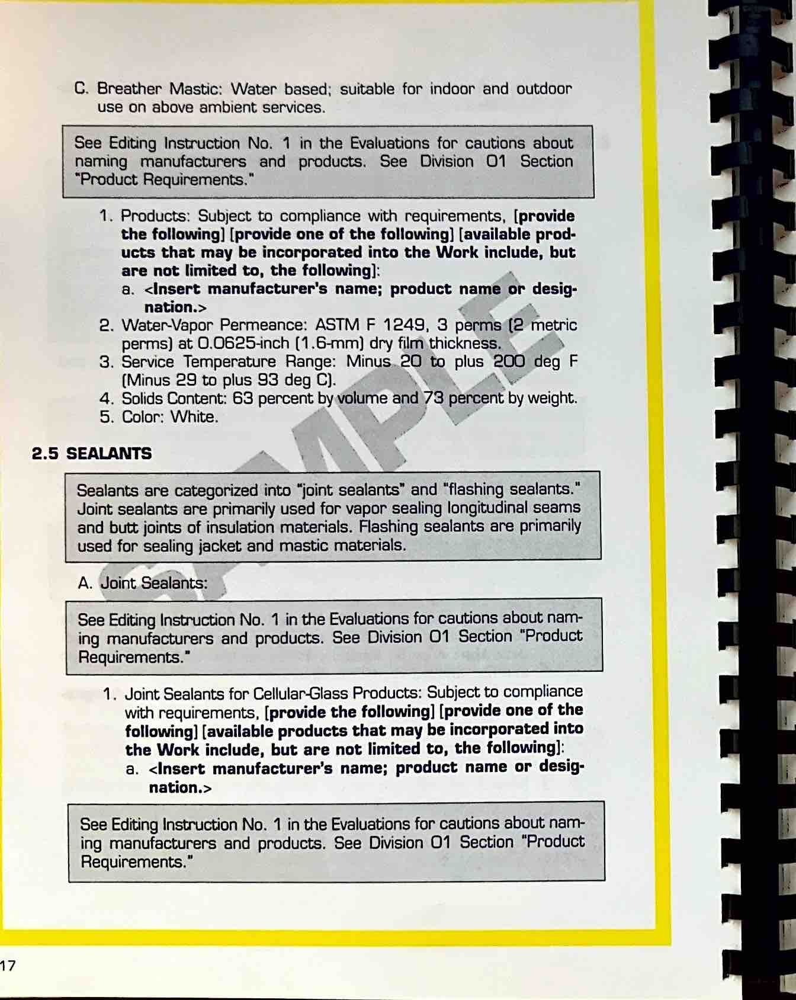
C.
Breather Mastic: Water based; suitable for indoor and outdoor use on above ambient services.
See Editing Instruction No.
1 in the Evaluations for cautions about naming manufacturers and products.
See Division 01 Section •Product Requirements.
" 1.
Products: Subject to compliance with requirements.
[provide the following) [provide one of the following] [available prod• ucts that may be incorporated into the Work include, but are not limited to, the following): a.
<lnsert manufacturer's name; product name or desig- nation.> 2.
Water-Vapor Permeance: ASTM F 1249, 3 perms 12 metric perms) at 0.0625-inch (I .6-mm) dry film thickness.
3.
Service Temperature Range: to plus 200 deg F (Minus 29 to plus 93 deg C).
4.
Solids Content: 63 percent by volume and 73 percent by weight.
5.
Color: White.
2.5 SEALANTS Sealants are categorized into "joint sealants" and "flashing sealants." Joint sealants are primarily used for vapor sealing longitudinal seams and but joints of insulation materials.
Flashing sealants are primarily used for sealing jacket and mastic materials.
A.
Joint Sealants: .4 See Editing Insb•uction No.
1 in the Evaluations for cautions about nam- ing manufacturers and products.
See Division 01 Section "Product Requirements." 1.
Joint Sealants for Cellular-Glass Products: Subject to compliance with requirements.
[provide the following] [provide one of the following] [available products that may be incorporated into the Work include, but are not limited to, the following]: a.
<lnsert manufacturer's name; product name or desig- nation.> See Editing Inswuction No.
1 in the Evaluations for cautions about nam- ing manufacturers and products.
See Division 01 Section "Product Requirements." 17
Page 228
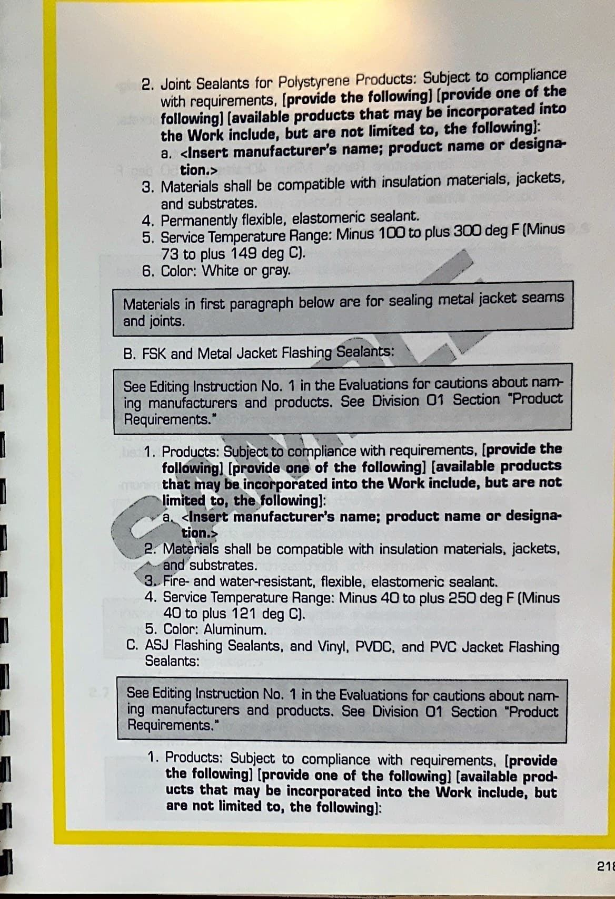
2.
Joint Sealants for Polystyrene Products: Subject to compliance with requirements, [provide the following] [provide one of the following] (available products that may be incorporated into the Work include, but are not limited to, the following]: a.
<lnsert manufacturer's name; product name or designa• tion.> 3.
Materials shall be compatible With insulation materials, jackets, and substrates.
Permanently flexible, elastomeric sealant.
4.
Service Temperature Range: Minus 100 to plus 300 deg F (Minus 5.
73 to plus 149 deg C).
6.
Color: White or gray.
Materials in first paragraph below are for sealing metal jacket seams and joints.
B.
FSK and Metal Jacket Flashing Sealants: See Editing Instruction No.
1 in une Evaluations for cauions about narry ing manufacturers and products.
See Division 01 Section "Product Requirements." Products: Subject to compliance with requirements, [provide the 1.
followingl [provide one of the following] [available products that may be incorporated into the Work include, but are not limited to, the following]: a <lnsert manufacturer's name; product name or designa- tion.?
2: Materials shall be compatible with insulation materials.
jackets, and substrates.
30 fire- and water-resistant, flexible, elastomeric sealant.
4.
Service Temperature Range: Minus 40 to plus 250 deg F (Minus 40 to plus 121 deg C).
5.
Color: Aluminum.
C.
ASJ Flashing Sealants, and Vinyl, PVDC, and PVC Jacket Flashing Sealants: See Editing Instruction No.
1 in the Evaluations for cautions about narry ing manufacturers and products.
See Division 01 Section "Product Requirements." 1.
Products: Subject to compliance with requirements, [provide the following] [provide one of the following] [available prod- ucts that may be incorporated into the Work include, but are not limited to, the following]:
Page 229
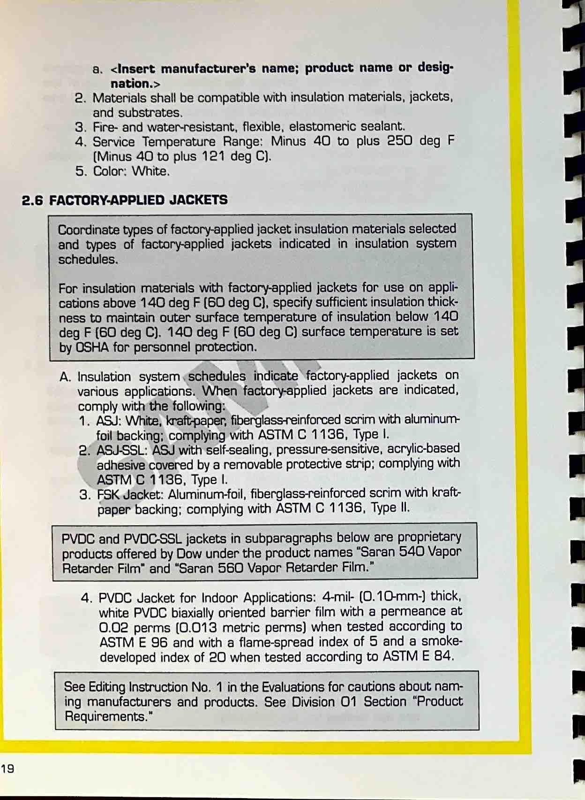
a.
<tnsert manufacturer's name; product name or desig• nation.> 2.
Materials shall be compatible with insulation materials, jackets, and substrates.
3.
Fire- and water-resistant, flexible, elastomeric sealant.
4.
Service Temperature Range: Minus 40 to plus 250 deg F (Minus 40 to plus 121 deg C).
5.
Color: White.
2.6 FACTORY-APPLIED JACKETS Coordinate types of factory-applied jacket insulation materials selected and types of factory-applied jackets indicated in insulation system schedules.
For insulation matertals with factory-applied jackets for use on appli- cations above 140 deg F (60 deg C), specify sufficient insulation thick- ness to maintain outer surface temperature of insulation below 140 deg F (60 deg C).
140 deg F (60 deg C) surface temperature is set by OSHA for personnel protection.
A.
Insulation systems schedules indicate factory-applied jackets on various applications, When factory-applied jackets are indicated, comply With the following: 1.
ASJ: White.
Icaft-paper, fiberglass-reinforced scrim with aluminurry foil backing; complying with ASTM C 1136, Type l.
2.
ASJ-SSL: ASJ with self-sealing, pressure-sensitive, acrylic-based adhesive covered by a removable protective strip: complying with ASTM C 1186, Type l.
3.
FSK Jacket: Aluminum-foil, fiberglass-reinforced scrim with kraft- paper backing; complying with ASTM C 1136, Type II.
PVDC and PVDC-SSL jackets in subparagraphs below are proprietary products offered by Dow under the product names "Saran 540 Vapor Retarder Film" and "Saran 560 Vapor Retarder Film." 4.
PVDC Jacket for Indoor Applications: a-mil- (0.10-mm-) thick, white PVDC biaxially oriented barrier film with a permeance at 0.02 perms (0.013 metric perms) when tested according to ASTM E 96 and with a flame-spread index of 5 and a smoke- developed index of 20 when tested according to ASTM E 84.
See Editing Instruction No.
1 in the Evaluations for cautions about nam- ing manufacturers and products.
See Division 01 Section "Product Requirements." 19
Page 230
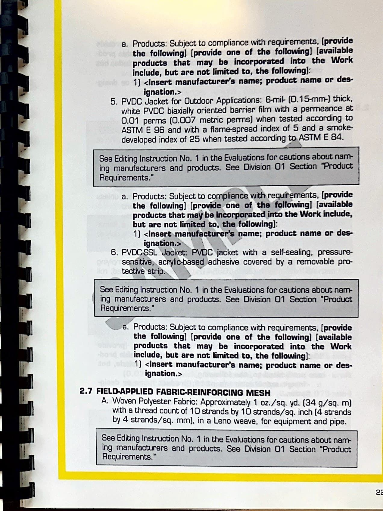
a.
Products: Subject to compliance with requirements, (provide the following] [provide one of the following) [available products that may be incorporated into the Work include, but are not limited to, the following]: 1) <lnsert manufacturer's name; product name or des- ignation.> 5.
PVDC Jacket for Outdoor Applications: 6-mil- (O.
15-mrn-) thick, white PVDC biaxially oriented barrier film with a permeance at 0.01 perms (0.007 metric perms) when tested according to ASTM E 96 and with a flame-spread index of 5 and a smokæ developed index of 25 when tested according toASTM E 84.
See Editing Instruction No.
1 in the Evaluations for cautions about nan-y ing manufacturers and products.
See Division 01 Section "Product Requirements." a.
Products: Subject to compliance with requirements, [provide the following] [provide one of the followingl [available products that may be incorporated into the Work include, but are not limited to, the following]: 1) <lnsert manufacturer's name; product name or ignation.> 6.
PVDC-SSL 'Jacket: PVDC jacket with a self-sealing, pressure- sensitive, acrylic-based adhesive covered by a removable pro- tective stripey See Editing Instruction No.
1 in the Evaluations for cautions about ing manufacturers and products.
See Division 01 Section •Product Requirements." a.
Products: Subject to compliance with requirements, [provide the following] [provide one of the followingl [available products that may be incorporated into the Work include, but are not limited to, the following]: 1) <lnsert manufacturer's name; product name or des- ignation.> 2.7 FIELD-APPLIED FABRIC-REINFORCING MESH A.
Woven Polyester Fabric: Approximately 1 oz./sq.
yd.
(34 g/sq.
m) with a thread count of IO strands by 10 strands/sq.
inch (4 strands by 4 strands/sq.
mm), in a Leno weave, for equipment and pipe.
See Editing Instruction No.
1 in the Evaluations for cautions about nam- ing manufacturers and products.
See Division 01 Section "Product Requirements."
Page 231
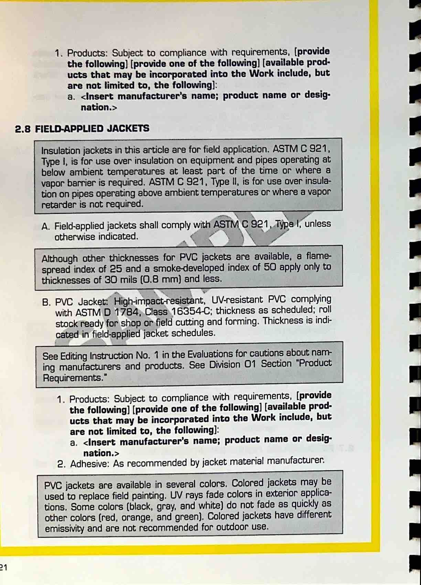
1.
Products: Subject to compliance with requirements, (provide the following) [provide one of the following) [available prod• ucts that may be incorporated into the Work include, but are not limited to, the following]: a.
<lnsert manufacturer's name; product name or desig- nation.> 2.8 FIELD-APPLIED JACKETS Insulation jackets in this article are for field application.
ASTM C 921 , Type I, is for use over insulation on equipment and pipes operating at below ambient temperatures at least part of the time or where a vapor barrier is required.
ASTM C 921 , Type II, is for use over insula- tion on pipes operating above ambient temperatures or where a vapor retarder is not required.
A.
field-applied jackets shall comply with AS C 921, TWI, unless otherwise indicated.
Although other thicknesses for PVC jackets are available, a flame- spread index of 25 and a smoke-developed index of 50 apply only to thicknesses of 80 mils (O.B mm) and less.
B.
PVC Jacket'.
High-impact-resistant, LIV-resistant PVC complying with ASTM D 1784, Class 16354-C; thickness as scheduled; roll stock ready for shop or field cutting and forming.
Thickness is indi- gated in field-applied jacket schedules.
See Editing Instruction No.
1 in the Evaluations for cautions about nam- ing manufacturers and products.
See Division 01 Section "Product Requirements." 1.
Products: Subject to compliance with requirements, [provide the following] [provide one of the following] [available prod• ucts that may be incorporated into the Work include, but are not limited to, the following]: a.
<lnsert manufacturer's name; product name or desig• nation.> 2.
Adhesive: As recommended by jacket material manufacturer.
PVC jackets are available in several colors.
Colored jackets may be used to replace field painting.
UV rays fade colors in exterior applica- tions.
Some colors (black, gray, and white) do not fade as quickly as other colors (red.
orange, and green).
Colored jackets have different emissivity and are not recommended for outdoor use.
21
Page 232
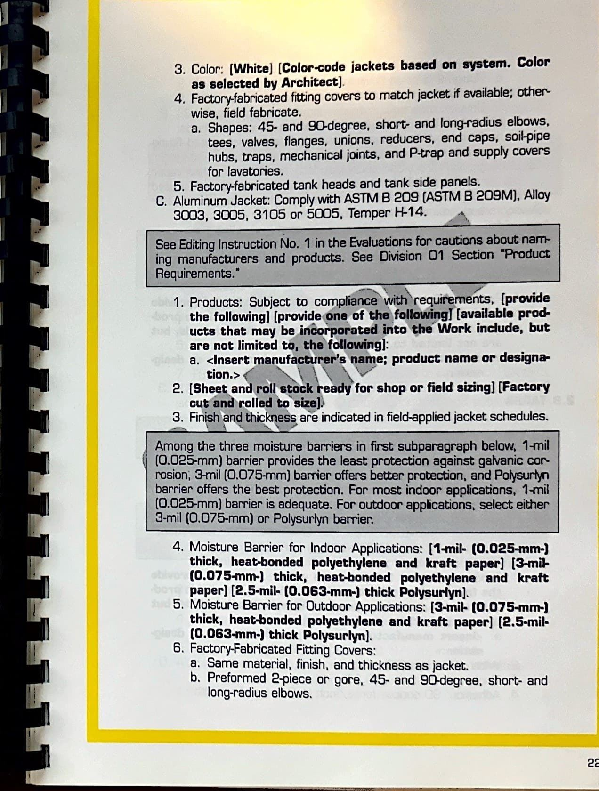
3.
4.
5.
Color: [White) [Color-code jackets based on system.
Color as selected by Architect).
Factoryfabricated füng covers to match jacket if available; oüler• wise, field fabricate.
a.
Shapes: 45- and 90-degree, short- and long-radius elbows, tees, valves, flanges, unions, reducers, end caps, soil-pipe hubs, traps, mechanical joints, and P-trap and suppty covers for lavatories.
Factory-fabricated tank heads and tank side panels.
C.
Aluminum Jacket: Complywith ASTM B 209 (ASTM B 209M), Alloy 3003, 3005, 3105 or 5005.
Temper 414.
See Editing Instruction No.
1 in the Evaluations for cautions about narry ing manufacturers and products.
See Division 01 Section "Product Requirements." 1.
Products: Subject to compliance with\requrrements, [provide the followingl [provide one of the followingl [available pro& ucts that may be incorporated into theWork include, but are not limited to, the following]: a.
<lnsert manufacturer•s name; product name or designa- tion.> 2.
[Sheet and roll stock ready for shop or field sizing] [Factory cut and rolled to sizell 3.
Finish and thickness are indicated in field-applied jacket schedules.
Among the three moisture barriers in first subparagraph below.
lonil (0.025-mm) barrier provides the least protection against galvanic cor- rosion', a-mil (0.075-mm) bamier offers better protecüon, and Potysur+yn barrier offers the best protection.
For most indoor applications, I-mil (0.025-rnm) barrier is adequate.
For outdoor applications, select either a-mil (0.075-mm) or Polysurlyn barrier.
1 4.
5.
6.
Moisture Barrier for Indoor Applications: [I-mil- (0.025-mm•) thick, heat-bonded polyethylene and kraft paper] [3-mil• (0.075-mm.) thick, heat-bonded polyethylene and kraft paper] [2.5-mil• (0.063•mm•) thick Polysurlynl.
Moisture Barrier for Outdoor Applications: [3-mil.
(0.075-mm-) thick, heat-bonded polyethylene and kraft paper] [2.5•mil- (0.063•mm-) thick Polysurlyn).
Factorfrabricated Fitting Covers: a.
Same material, finish, and thickness as jacket.
b.
Preformed 2-piece or gore.
45- and 90-degree, short- and long-radius elbows,
Page 233
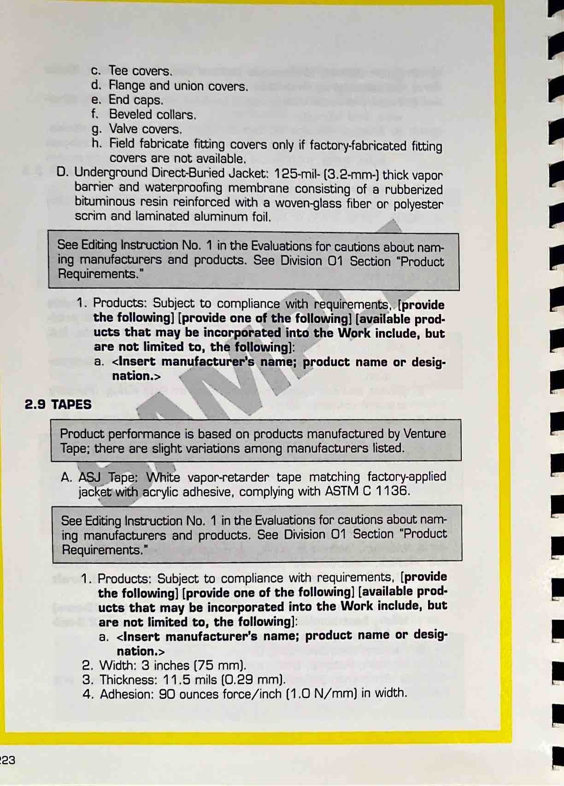
c.
d.
e.
f.
g.
h.
Tee covers.
Flange and union covers.
End caps.
Beveled collars, Valve covers.
field fabricate fitting covers only if factory-fabricated fitting covers are not available.
D.
Underground Direct-Buried Jacket: 125-mil- (3.2-mm-) thick vapor barrier and waterproofing membrane consisting of a rubberized bituminous resin reinforced with a woven-glass fiber or polyester scrim and laminated aluminum foil.
See Editing Insouction No.
1 in the Evaluations for cautions about nam- ing manufacturers and products.
See Division 01 Section "Product Requirements.
" 1.
Products: Subject to compliance with requirements, • [provide the following] [provide one of the following] [available prod- ucts that may be incorporated into the Work include, but are not limited to, the following]: a.
<lnsert manufacturer's name; product name or desig- nation.> 2.9 TAPES Product performance is based on products manufactured by Venture Tape; there are slight variations among manufacturers listed.
A.
ASJ Tape: White vapor-retarder tape matching factory-applied jacket with acrylic adhesive, complying with ASTM C 1136.
See Editing Instruction No.
I in the Evaluations for cautions about nam- ing manufacturers and products.
See Division 01 Section "Product Requirements." 1.
2.
3.
4.
Products: Subject to compliance with requirements, [provide the following] [provide one of the following) [available prod- ucts that may be incorporated into the Work include, but are not limited to, the following]: a.
<lnsert manufacturer's name; product name or desig- nation.> Width: 3 inches (75 mm).
Thickness: 11.5 mils (0.29 mm).
Adhesion: 90 ounces force/inch (1 .O N/mm) in width.
Page 234
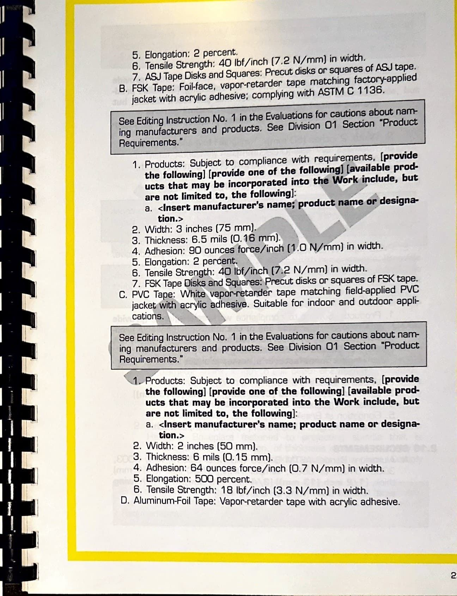
5.
Elongation: 2 percent.
6.
Tensile Strength: 40 lbf/inch (7.2 N/mm) in width, 7.
ASJ Tape Disks and Squares: Precut disks or squares of ASJ tape.
B.
FSK Tape: Foil-face, vapor-retarder tape matching factory-applied jacket with acrylic adhesive; complying with ASTM C 1136.
See Editing Instruction No.
1 in the Evaluations for cautions about ing manufacturers and products.
See Division 01 Section EProduct Requirements.
" 1.
2.
3.
4.
5.
6.
7.
Products: Subject to compliance with requirements, [provide the following] [provide one of the following] [available prod- ucts that may be incorporated into the Work include, but are not limited to, the following]: a.
<lnsert manufacturer's name; product name or designa- tion.> Width: 3 inches (75 mm).
Thickness: 6.5 mils (0.16 mm).
Adhesion: 90 ounces force/inch (1.0 N/mm) in width.
Elongation: 2 percent.
Tensile Strength: 40 lbf/inch (7.2 N/mm) in width.
FSK Tape Disks and Squares: Precut disks or squares of FSK tape.
C.
PVC Tape: White vapor-retarder tape matching field-applied PVC jacket with acrylic adhesive.
Suitable for indoor and outdoor appli- cations.
See Editing Instruction No.
1 in the Evaluations for cautions about nan-y ing manufacturers and products.
See Division 01 Section "Product Requirements.
" Products: Subject to compliance with requirements, [provide the followingl [provide one of the following] [available prod- ucts that may be incorporated into the Work include, but are not limited to, the following]: a.
<lnsert manufacturer's name; product name or designa- tion.> 2.
Width: 2 inches (50 mm).
a.
Thickness: 6 mils (O.
15 mm).
4.
Adhesion: 64 ounces force/inch (0.7 N/mm) in width.
5.
Elongation: 500 percent.
6.
Tensile Strength: 18 lbf/inch (3.3 N/mm) in width.
D.
Aluminum-Foil Tape: Vapor-retarder tape with acrylic adhesive.
2
Page 235
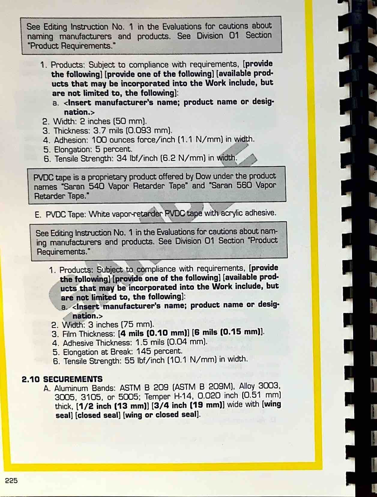
See Editing Instruction No, I in the Evaluations for cautions about naming manufacturers and products.
See Division 01 Section "Product Requirements," 1.
Products: Subject to compliance wth requirements, [provide the following) (provide one of the following) (available prod• ucts that may be incorporated into the Work include, but are not limited to, the following): a.
<tnsert manufacturer's name; product name or desig• nation.> 2.
Width: 2 inches (50 mm).
3.
Thickness: 3.7 mils (0.093 mm).
4.
Adhesion: 100 ounces force/inch (1.1 N/mm) in width.
5.
Elongation: 5 percent.
6.
Tensile Strength: 34 lbf/inch (6.2 N/mm) in Width.
PVDC tape is a proprietary product offered by Dow under the product names "Saran 540 Vapor Retarder Tape" and Saran 560 Vapor Retarder Tape." E.
PVDC Tape: White vapor-retaråer PVDC tape With acrylic adhesive.
See Editing Inswuction No.
1 in the Evaluations for cautions about nam- ing manufacturers and products.
See Division 01 Section "Product Requirements." 1.
Products: Subject to compliance With requirements, [provide the following] [provide one of the following] [available prod- ucts that may be incorporated into the Work include, but are not limited to, the following]: av/<lnsert manufacturer's name; product name or desig- naüon.> 2.
Width: 3 inches (75 mm).
3.
Film Thickness: [4 mils (0.10 mm)) [6 mils (0.15 mm)).
4.
Adhesive Thickness: 1.5 mils (0.04 mm).
5.
Elongation at Break: 145 percent.
6.
Tensile Strength: 55 lbf/inch (10.1 N/mm) in width.
2.10 SECUREMENTS A.
Aluminum Bands: ASTM B 209 (ASTM B 209M), Alloy 3003, 3005, 3105.
or 5005; Temper H-14, 0.020 inch (0.51 mm) thick, [1/2 inch (13 mm)) [3/4 inch (IS mm)] wide with [wing seal) (closed seal] [wing or closed seal].
225
Page 236
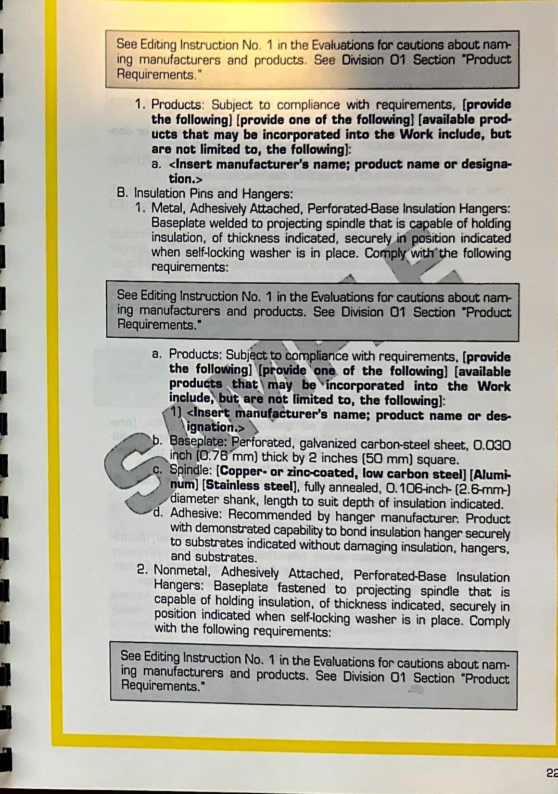
See Editing Instruction No.
1 in the Evaluations for cautions about narry ing manufacturers and products.
See Division 01 Section 'Product Requirements.
" 1.
Products: Subject to compliance With requirements, [provide the following] [provide one of the following] [available prod- ucts that may be incorporated into the Work include, but are not limited to, the following): a.
<lnsert manufacturer's name; product name or designa- tion.> B.
Insulation Pins and Hangers: 1.
Metal, Adhesively Attached, Perforated-Base Insulation Hangers: Baseplate welded to projecting spindle that is capable of holding insulation, of thickness indicated, securely in postion indicated when self-locking washer is in place.
Comply•witmche following requirements: See Editing Instruction No.
1 in the Evaluations for cauions about nan-y ing manufacturers and products.
See Division 01 Section "Product Requirements." a.
Products: Subjact wiffl requirements.
[provide the following] [providö one of the following] [available products that \ may béincorporated into the Work include,Ybut.
are not limited to, the following]: ) <lnsert manufacturer's name; product name or des- ignation.> aseplate: Perforated.
galvanized carbon-steel sheet, 0.030 inch (CJ.76Zmm) thick by 2 inches (50 mm) square.
c, pindle: [Copper• or zinc-coated, Iow carbon steel] [Alumi- numl [Stainless steel], fully annealed, O.
106-inch- (2.6-mrn-) ydiameter shank, length to suit depth of insulation indicated.
d.
Adhesive: Recommended by hanger manufacturer.
Product with demonstrated capability to bond insulation hanger securely to substrates indicated without damaging insulation, hangers, and substrates.
2.
Nonmetal, Adhesively Attached, Perforated-Base Insulation Hangers: Baseplate fastened to projecting spindle that is capable of holding insulation.
of thickness indicated.
securely in position indicated when self-locking washer is in place.
Comply with the following requirements: See Editing Instruction No.
1 in the Evaluations for cautions about nam- ing manufacturers and products.
See Division 01 Section "Product Requirements."
Page 237
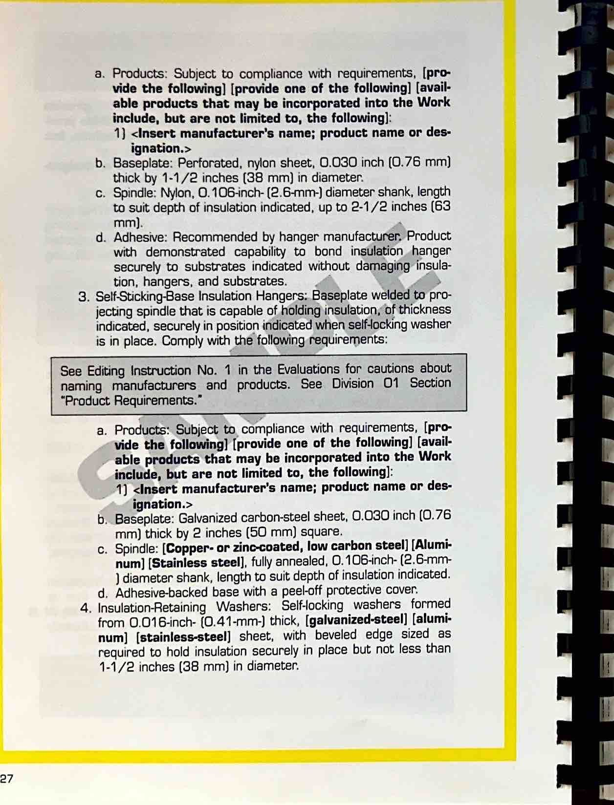
a.
Produ&: Subject to compliance With requirements.
[pro- vide the following) [provide one of the followingl [avail- able products that may be incorporated into the Work include, but are not limited to, the following]: 1) <lnsert manufacturer's name; product name or des• ignation.> b.
Baseplate: Perforated, nylon sheet.
0.030 inch (0.76 mm) thick by 1-1/2 inches (38 mm) in diameter.
c.
Spindle: Nylon, O.
106-inch- (2.6-mm-) diameter shank.
length to suit depth of insulation indicated, up to 2-1 / 2 inches (63 mm).
d.
Adhesive: Recommended by hanger manufacturer.
Product with demonstrated capability to bond insulation hanger securely to substrates indicated without damaging •insula- tion, hangers, and substrates.
3.
Self-Sucking-Base Insulation Hangers; Baseplate welded to pro- jecbng spindle that is capable of holding insulation, of thickness indicated, securely in position indicated when self-locking washer is in place.
Comply with the following requirements: See Editing Instruction No.
1 in the Evaluations for cautions about naming manufacturers and products.
See Division 01 Section "Product Requirements.
P a.
Products: Subject to compliance with requirements, [pro- vide the following) Iprouide one of the following] [avail- able products that may be incorporated into the Work include, but are not limited to, the following]: 1) <lnsert manufacturer's name; product name or des- ignation.> b.
Baseplate: Galvanized carbon-steel sheet, 0.030 inch (0.76 mm) thick by 2 inches (50 mm) square.
c.
Spindle: [Copper• or zinc-coated, Iow carbon steel] [Alumi- num) [Stainless steel], fully annealed, O.
106-inch- (2.6-mm- ) diameter shank, length to suit depth of insulation indicated.
d.
Adhesive-backed base with a peel-off protective cover.
4.
Insulation-Retaining Washers: Self-locking washers formed from 0.016-inch- (0.41-mm-) thick, [galvanized-steel] (alumi• num] [stainless-steel] sheet, with beveled edge sized as required to hold insulation securely in place but not less than 1-1/2 inches (38 mm) in diameter.
27
Page 238
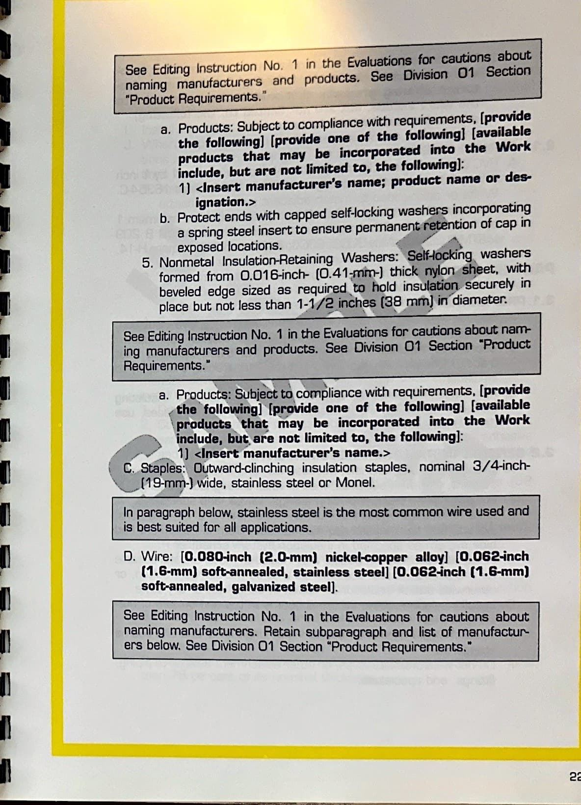
See Editing Instruction No.
1 in the Evaluations for cautions about naming manufacturers and products.
See Division 01 Section "Product Requirements." a.
Products: Subject to compliance with requirements.
(provide the following] [provide one of the following] [available products that may be incorpor•ated into the Work include, but are not limited to, the following): 1) <lnsert manufacturer's name; product name or des- ignation.> b.
Protect ends with capped self-locking washers incorporating a spring steel insert to ensure permanent retention of cap in exposed locations.
5.
Nonmetal Insulation-Retaining Washers: Self-lockng washers formed from 0.016-inch- (0.41-mm-J thick nylon.
sheet, with beveled edge sized as required to hold insulation securety in place but not less than 1-1/2_inches (38 mm) in diameter.
See Editing Instruction No.
1 in the Evaluations for cations about narn- ing manufacturers and products.
See Division 01 Section "Product Requirements." a.
Products: Subject to compliance with requirements, (provide the following] [provide one of the following] [available products 'that, may be incorporated into the Work include, but are not limited to, the following]: 1) <lnsert manufacturer's name.> C.
Staples: Outward-clinching insulation staples, nominal 3/4-inch- (19-mm-)M/ide, stainless steel or Monel.
In paragraph below.
stainless steel is the most common wire used and is best suited for all applications.
D.
Wire: [0.080-inch (2.0-mm) nickekopper alloy] [0.062•inch (1.6•mmJ soft-annealed, stainless steel] [0.062-inch (1.6-mm) soft-annealed, galvanized steel].
See Editing Instruction No.
1 in the Evaluations for cautions about naming manufacturers.
Retain subparagraph and list of manufactur- ers below.
See Division 01 Section "Product Requirements." 2
Page 239
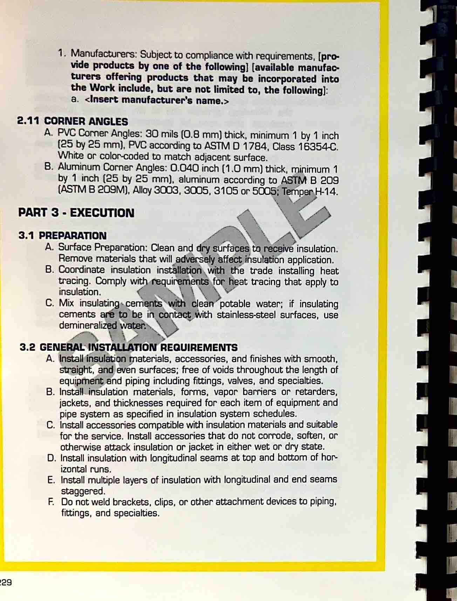
I.
Manufacturers: Subject to compliance with requirements, (pro• vide products by one of the following] (available manufac- turers offering products that may be incorporated into the Work include, but are not limited to, the following]: a.
<lnsert manufacturer's name.> 2.11 CORNER ANGLES A.
PVC Corner Angles: 30 mils (0.8 mm) thick, minimum I by 1 inch (25 by 25 mm), PVC according to ASTM D 1784, Class 163540.
White or color-coded to match adjacent surface.
B.
Aluminum Corner Angles: 0.040 inch (1 .O mm) thick, minimum 1 by 1 Inch (25 by 25 mm), aluminum according to ASTM B 209 (ASTMB 209M), Alloy 3003, 3005.3105 or 5005; Temp H-14.
PART 3 • EXECUTION 3.1 PREPARATION A.
Surface Preparation: Clean ang dry surfaces to receive insulation.
Remove materials that will adversely affect insulation application.
B.
Coordinate insulation installaüon with the trade installing heat tracing.
Comply withequirements h at tracing that apply to insulation.
C.
Mix insulating' cemenöwith clean potable water; if insulating cements aÆ to' be i contagWith stainless-steel surfaces, use demineralized 3.2 GENERAL INSTALLATION REQUIREMENTS A.
Install insulation materials, accessories, and finishes with smooth, ü•aight, and even surfaces; free of voids throughout the length of equipment and piping including fittings, valves, and specialties.
B.
Install-insulation materials, forms.
vapor barriers or retarders, jackets.
and thicknesses required for each Item of equipment and pipe system as specified in insulation system schedules.
Install accessories compatible with insulation materials and suitable C.
for the service.
Install accessories that do not corrode, soften, or otherwise atack insulation or jacket in either wet or dry state.
D.
Install insulation with longitudinal seams at top and bottom of hor- izontal runs.
Install multiple layers of insulation with longitudinal and end seams E.
staggered.
Do not weld brackets.
clips, or other attachment devices to piping, F.
fitings, and specialties.
Page 240
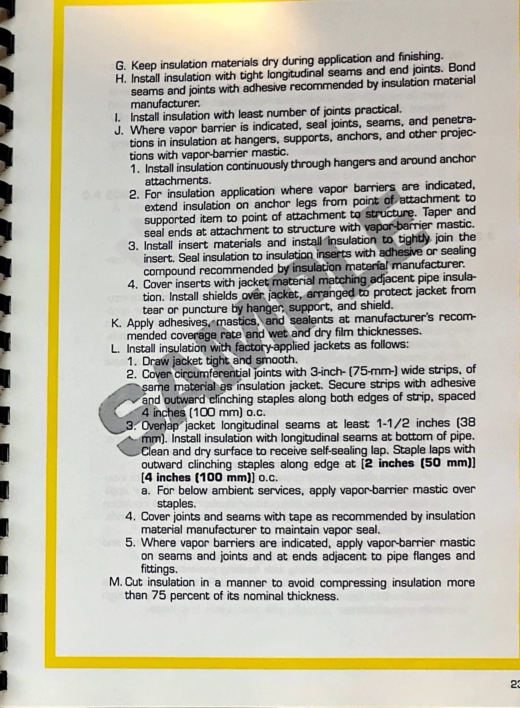
Keep insulation materials dry during application and finishing.
G.
H.
Install insulation with tight longitudinal seams and end joints.
Bond seams and joints with adhesive recommended by insulation material manufacturer.
Install insulation with least number of joints practical.
Where vapor barrier is indicated, seal joints, seams, and penetra- J.
tions in insulation at hangers, supports, anchors.
and oåer projec- tions with vapor-barrier mastic.
1.
Install insulation continuously through hangers and around anchor attachments.
2.
For insulation application where vapor barriers are indicated, extend insulation on anchor legs from point of,atachment to supported item to point of attachment to su•ueture.
Taper and seal ends at atachment to structure with vapor-baFrier mastic.
3.
Install insert materials and instaJFinsulation to tighty join Ü•le insert.
Seal insulation to insulation inserts with adhesö.e or sealing compound recommended by insulation materiat månufacturer.
4.
Cover inserts with jacket-material matching adjacent pipe insula- tion.
Install shields ovér, protect jacket from tear or puncture by hanger, support, and shield.
K.
Apply sealants at manufacturer's recom- mended coverage rate and •wet and dry film thicknesses.
L.
Install insulatiån with factory-applied jackets as follows: 1.
Draw jacket tight and smooth.
2.
Cover ciccumferential joints with a-inch- (75-mm-) wide strips, of ame material•as Insulation jacket.
Secure strips with adhesive and outward cfihching staples along both edges of strip, spaced 4 inches (100 mm) o.c.
a.ZOver)ap'jacket longitudinal seams at least 1-1/2 inches (38 mm).
Install insulation with longitudinal seams at bottom of pipe.
Clean and dry surface to receive self-sealing lap.
Staple laps with outvvard clinching staples along edge at [2 inches (50 mm)) [4 inches (100 mm)] o.c.
a.
For below ambient services.
apply vapor-barrier mastic over staples.
4.
Cover joints and seams with tape as recommended by insulation material manufacturer to maintain vapor seal.
5.
Where vapor barriers are indicated, apply vapor-barrier mastic on seams and joints and at ends adjacent to pipe flanges and finngs.
M.
Cut insulation in a manner to avoid compressing insulation more than 75 percent of its nominal thickness.
2
Page 241
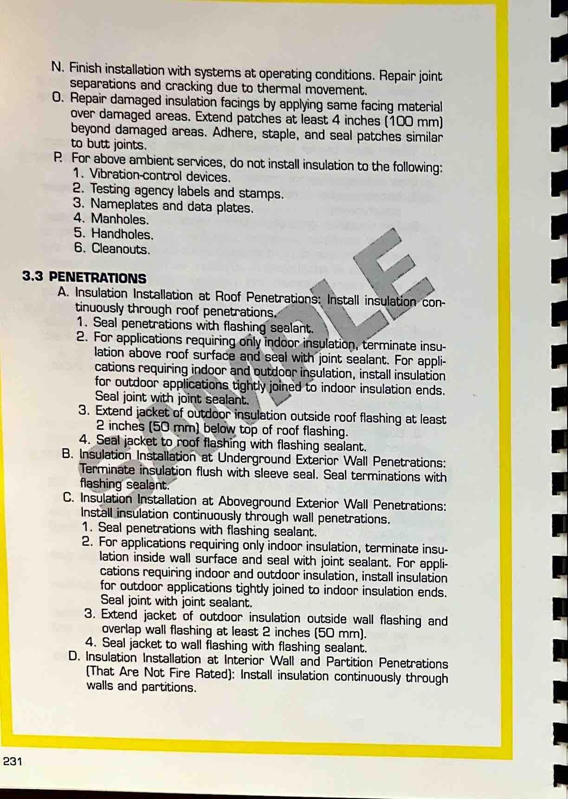
N.
finish installation with systems at operating conditions.
Repair joint separations and cracking due to thermal movement.
O.
Repair damaged insulation facings by applying same facing material over damaged areas.
Extend patches at least 4 inches (100 mm) beyond damaged areas.
Adhere, staple, and seal patches similar to but joir• P.
For above ambient services, do not install insulation to the following: I.
Vibration-control devices.
2.
Testing agency labels and stamps.
3.
Nameplates and data plates.
4.
Manholes.
5.
Handholes.
6.
Cleanouts.
3.3 PENETRATIONS A.
Insulation Installation at Roof Install insulation con- tinuously through roof penetrations 1.
Seal penetrations with flashing sealant.
2.
For applications requiring orhly indoor insulatiomterminate insu- lation above roof surface and seal with'joint sealant.
For appli- cations requiring indoor and outdoor ityulation, install insulation for outdoor applicaions tightly ioinéd to indoor insulation ends.
Seal joint With joint sealant.
a.
Extend yacket of outdoor insulation outside roof flashing at least 2 inches (50 mm) be16w.
tdp of roof flashing.
4.
Seal jacket to roof flashing with flashing sealant.
B.
Insulaüon InstallatioÖat I-Inderground Exterior Wall Penetrations: Terminate insulation flush with sleeve seal.
Seal terminations with flashing' sealant?" C.
Insulation Installation at Aboveground Exterior Wall Penetrations: Install -insulation continuously through wall penetrations.
1 .
Seal penetrations with flashing sealant.
2.
For applications requiring only indoor insulation, terminate insu- lation inside wall surface and seal with joint sealant.
For appli- cations requiring indoor and outdoor insulation, install insulation for outdoor applications tightly joined to indoor insulation ends.
Seal joint with joint sealant.
3.
Extend jacket of outdoor insulation outside wall flashing and overlap wall flashing at least 2 inches (50 mm).
4.
Seal jacket to wall flashing with flashing sealant.
D.
Insulation Installation at Interior Wall and Partition Penetrations (That Are Not Fire Rated): Install insulation continuously through walls and partitions.
231
Page 242
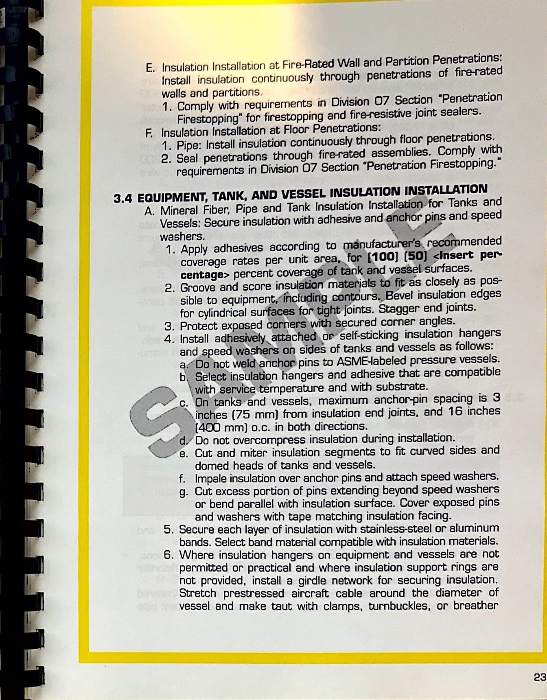
E.
F.
Insulation Installation at Fire-Rated Wall and Partition Penetrations: Install insulation continuously through penetrations of fire-rated walls and partitions.
1.
Comply with requirements in Division 07 Section "Penetration Firestopping" for firestopping and fire-resistive joint sealers.
Insulation Installation at Floor Penetrations: 1.
Pipe: Install insulation continuously through floor penetrations.
2.
Seal penetrations through fire-rated assemblies.
Comply with requirements in Division 07 Section "Penetration firestopping." 3.4 EQUIPMENT, TANK, AND VESSEL INSULATION INSTALLATION A.
Mineral fiber, Pipe and Tank Insulation Installation•for Tanks and Vessels: Secure insulation with adhesive and anchor pins and speed washers.
1.
2.
3.
4.
Apply adhesives according to manufacturer*s.
recommended coverage rates per unit area, for [100] (50] <lnsert per• centage> percent coverage of tank and vessel surfaces.
Groove and score insulation materials to fit as closely as pos- Sible to equipment,'ihclufiig contours.,Bevel insulation edges for cylindrical surfaces for tight joints.
Stagger end joints.
Protect exposed corners with secured corner angles.
Install adhesivefy.ttåched pr' self-sticking insulation hangers and speed washers on sides of tanks and vessels as follows: a—Do not weld anchor pins to ASME-labeled pressure vessels.
b Select insulation hangers and adhesive that are compatible with service temperature and with substrate.
c.
On tanksp and vessels, maximum anchor-pin spacing is 3 Inches (75 mm) from insulation end joints, and 16 inches 5.
6.
[400 mm) o.c.
in both directions.
d/ Do not overcompress insulation during installation.
e.
Cut and miter insulation segments to fit curved sides and domed heads of tanks and vessels.
f.
Impale insulation over anchor pins and attach speed washers.
g.
Cut excess portion of pins extending beyond speed washers or bend parallel with insulation surface.
Cover exposed pins and washers with tape matching insulation facing.
Secure each layer of insulation with stainless-steel or aluminum bands.
Select band material compatible with insulation materials.
Where insulation hangers on equipment and vessels are not permitted or practical and where insulation support rings are not provided, install a girdle network for securing insulation.
Stretch prestressed aircraft cable around the diameter of vessel and make taut with clamps, turnbuckles, or breather 23
Page 243
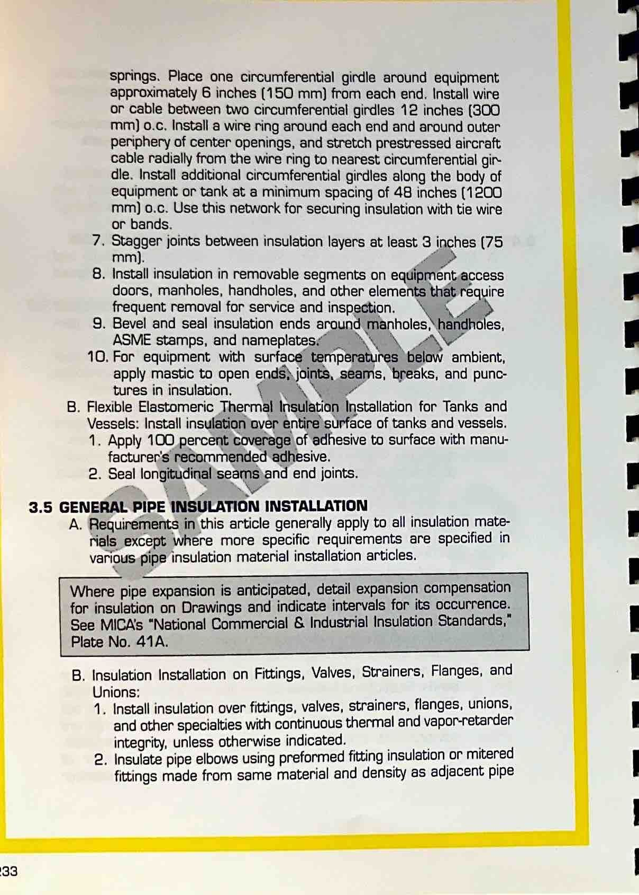
springs.
Place one circumferential girdle around equipment approximately 6 inches (150 mm) from each end.
Install wire or cable between two circumferential girdles 12 inches (300 mm) o.c.
Install a wire ring around each end and around outer pemphery of center openings, and stretch prestressed aircraft cable radially from the wire ring to nearest circumferential gir- dle.
Install additional circumferential girdles along the body of equipment or tank at a minimum spacing of 48 inches (1200 mm) o.c.
Use this nevwork for securing insulation with tie wire or bands.
7.
Stagger pints between insulation layers at least 3 inches (75 mm), B.
Install insulation in removable segments on equ pment access doors, manholes, handholes, and other elements that réquire frequent removal for service and inspection.
9.
Bevel and seal insulation ends around, manholes, andho es, ASME stamps, and nameplates.
10.
For equipment with surface temperatures below ambient, apply mastic to open end"SjoinÄ seams, breaks, and punc- tures in insulation.
B.
Flexible Elastomeric Thermal Insu atian installation for Tanks and Vessels: Install insulation Ger entire surface of tanks and vessels.
I.
Apply 100 percent coverage of adhesive to surface with manu- facturer's recommended •adhesive.
2.
Seal longitudinal seams and end joints.
3.5 GENERAL PIPE INSULATION INSTALLATION A.
Requirements in this article generally apply to all insulation mate- rials except where more specific requirements are specified in various pipe insulation material installation articles.
Where pipe expansion is anticipated, detail expansion compensation for insulation on Drawings and indicate intervals for its occurrence.
See MICA's "National Commercial & Industrial Insulation Standards," Plate No.
41A.
B.
Insulation Installation on Fittings, Valves.
Strainers, Flanges, and Unions: 1.
Install insulation over fittings, valves.
strainers, flanges, unions, and other specialties with continuous thermal and vapor-retarder integrity.
unless otherwise indicated.
2.
Insulate pipe elbows using preformed fiting insulation or mitered fittings made from same material and density as adjacent pipe 03
Page 244
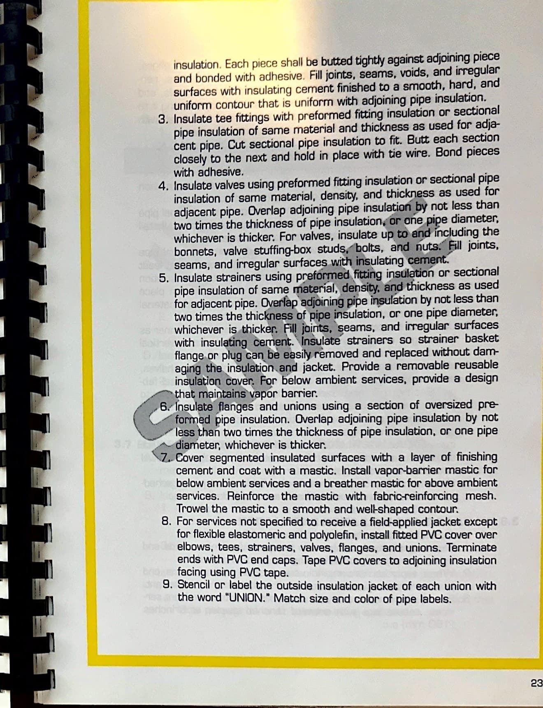
3.
4.
5.
insulation.
Each Piece shall be buted tight& against adjoining piece and bonded With adhesive.
Fill joints.
seams, voids, and irregular surfaces With Insulating cement finished to a smooth, hard, and uniform contour that is uniform with adjoining pipe insulation.
Insulate tee fiwngs With preformed fang insulation or sectional pipe insulation of same material and thickness as used for adjæ cent pipe.
Cut sectional pipe insulation to fit.
Butt each section closely to the next and hold in place with tie wire.
Bond pieces with adhesive.
Insulate valves using preformed fang insulation or sectional pipe insulation of same material, density, and tlickness as used for adjacent pipe.
Overlap adjoining pipe insulation by not less than two times the thickness of pipe insulatiorvor one pipe diameter.
whichever is thicker.
For valves, insulate up to and fncluding the bonnets, valve stuffing-box swds'bolts„ and nuts:'Fill joints, seams, and irregular surfaces with insulating cement.
Insulate strainers using pref6rmed fiting insulation or sectional pipe insulation of same material, density, ånd thickness as used for adjacent pipe.
Overfap adjoining pipe insulåtion by not less than two times the thickness of pipe insulation, or one pipe diameter, whichever is thicker.
Fill joints.
seams.
and irregular surfaces with insulating dement.\lnsulate strainers so strainer basket flange.or plug cambe easüyrémoved and replaced without darry aging tha insulatiomand jacket.
Provide a removable reusable insulation cover.
For below ambient services, provide a design that maintainsvapor barrier.
6/ Insulate flanges and unions using a section of oversized pre- formed pipe insulation.
Overlap adjoining pipe insulation by not less than two times the thickness of pipe insulation, or one pipe diameter, whichever is thicker.
N7æCover segmented insulated surfaces with a layer of finishing cement and coat with a mastic.
Install vapor-barrier mastic for below ambient services and a breather mastic for above ambient services.
Reinforce the mastic with fabric-reinforcing mesh.
Trowel the mastic to a smooth and well-shaped contour.
For services not specified to receive a field-applied jacket except for flexible elastomeric and polyolefin, install fiæd PVC cover over elbows, tees, strainers, valves.
flanges, and unions.
Terminate ends with PVC end caps.
Tape PVC covers to adjoining insulation facing using PVC tape.
9.
Stencil or labet the outside insulation jacket of each union with the word "UNION." Match size and color of pipe labels.
23 8.
Page 245
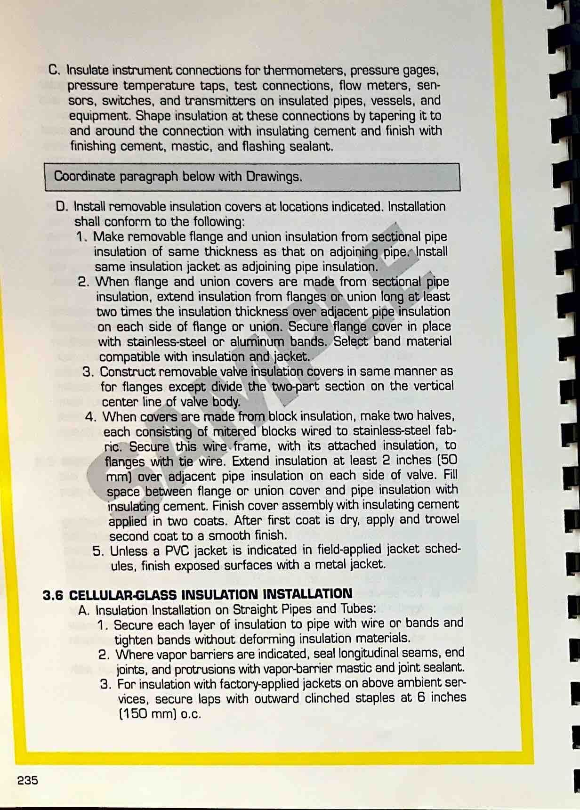
C, Insulate instrument connections for thermometers.
pressure gages, pressure temperature taps, test connections, flow meters, sen- sors, switches, and transmitters on insulated pipes, vessels, and equipment.
Shape insulation at these connections by tapering it to and around the connection With insulating Cement and finish with finishing cement, mastic, and flashing sealant.
Coordinate paragraph below with Drawings, D.
Install removable insulation covers at locations indicated.
Installation shall conform to the following: I.
Make removable flange and union insulation from sectional pipe insulation of same thickness as that on adjoining pipe.•lnstall same insulation jacket as adjoining pipe insulation.
2.
When flange and union covers are made from sectional Pipe insulation, extend insulation from flanges or union long at least two times the insulation thickness over adjacent pipe insulation on each side of flange or union.
Secure flange cover in place with stainless-steel or aluminum bands.
Select band material compatible with insulation and jacket.
3.
Construct removable valve insulation covers in same manner as for flanges except divide the 'Ovo-part section on the vertical center line of valve body.
4.
When covers are made from block insulation, make two halves.
each consisting of mitered blocks wired to stainless-steel fab- ric.
Secure this wireframe, with its attached insulation, to flanges with tie wire.
Extend insulation at least 2 inches (50 mm) overaadjacent pipe insulation on each side of valve.
Fill space betvveen flange or union cover and pipe insulation with insulating cement.
Finish cover assembly with insulating cement applied in two coats.
After first coat is dry, apply and trowel second coat to a smooth finish.
5.
Unless a PVC jacket is indicated in field-applied jacket sched- ules, finish exposed surfaces with a metal jacket.
3.6 CELLULARGLASS INSULATION INSTALLATION A.
Insulation Installation on Straight Pipes and Tubes: 1.
Secure each layer of insulation to pipe with wire or bands and tighten bands without deforming insulation materials.
2.
Where vapor barriers are indicated, seal longitudinal seams, end joints, and protrusions with vapor-barrier mastic and joint sealant.
3.
For insulation with factory-applied jackets on above ambient ser- vices.
secure laps with outward clinched staples at 6 inches (150 mm) o.c.
235
Page 246
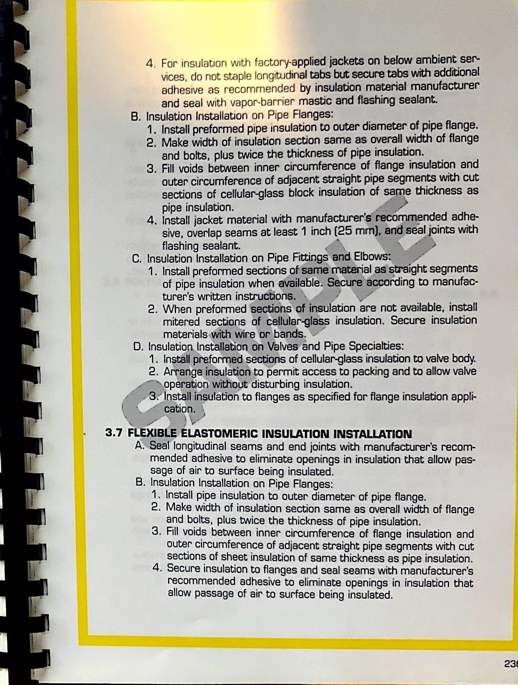
B.
C.
D.
4.
For insulation With factorvapplied jackets on below ambient ser- vices, do not staple longitudinal tabs but secure tabs with addiüonal adhesive as recommended by insulation material manufacturer and seal With vapor-barrier mastic and flashing sealant.
Insulation Installation on Pipe Flanges: 1.
Install preformed pipe insulation to outer diameter of pipe flange.
2.
Make width of insulation section same as overall width of flange and bolts, plus twice the thickness of pipe insulation.
3.
Fill voids beb,veen inner circumference of flange insulation and outer circumference of adjacent straight pipe segments with cut sections of cellular-glass block insulation of same thickness as pipe insulation.
4.
Install jacket material with manufacturer's recommended adhe- sive, overlap seams at least 1 inch (25 mm), and seal joints with flashing sealant.
Insulation Installation on Pipe fittings and Elbows: 1.
Install preformed sections of same material as sb•aight segments of pipe insulation when available.
Secure according to manufac- turer's written instructions.
2.
When preformed sections of insulation are not available, install mitered sections of cellular-glass insulation.
Secure insulation materials with wire or bands.
Insulation Installation on Valves and Pipe Specialties: 1.
Install preformed sections of cellular-glass insulation to valve body.
2.
Arrange insulation to permit access to packing and to allow valve operation without disturbing insulation.
3.
Install insulation to flanges as specified for flange insulation appli- cation.
3.7 FLEXIBLE ELASTOMERIC INSULATION INSTALLATION A.
Seal longitudinal seams and end joints with manufacturer's recom- mended adhesive to eliminate openings in insulation that allow pas- sage of air to surface being insulated.
B.
Insulation Installation on Pipe Flanges: 1.
2.
3.
4.
Install pipe insulation to outer diameter of pipe flange.
Make width of insulation section same as overall width of flange and bolts, plus twice the thickness of pipe insulation.
Fill voids between inner circumference of flange insulation and outer circumference of adjacent straight pipe segments with cut sections of sheet insulation of same thickness as pipe insulation.
Secure insulation to flanges and seal seams with manufacturer's recommended adhesive to eliminate openings in insulation that allow passage of air to surface being insulated.
Page 247
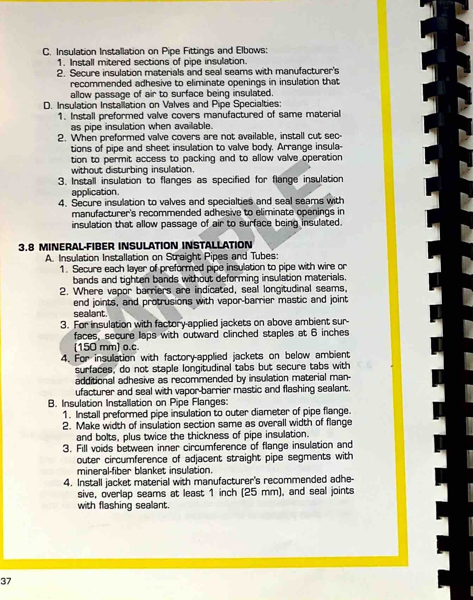
C.
Insulation Installabon on Pipe Fittings and Elbows: 1.
Install mitered sect.ions of pipe insulation.
2.
Secure insulation materials and seal seams With manufacturer's recommended adhesive to eliminate openings in insulation that allow passage of air to surface being insulated.
D.
Insulation Installation on Valves and Pipe Specialties: 1.
Install preformed valve covers manufactured of same material as pipe insulation when available.
2.
When preformed valve covers are not available, install cut sec- tions of pipe and sheet insulation to valve body.
Arrange insula- tion to permit access to packing and to allow valve operation without disturbing insulation.
3.
Install insulation to flanges as specified for flange insulation application.
4.
Secure insulation to valves and specialties and seal seams with manufacturer's recommended adhesive to eliminate openings in insulation that allow passage of air to surface being insulated.
3.8 MINERAL-FIBER INSULATION INSTALLATION A.
Insulation Installation on Straight Pipes and Tubes: 1.
Secure each layer of preforrned pipe insulabon to pipe with wire or bands and tighten bands wiülout deforming insulation materials.
2.
Where vapor barriers are indicated.
seal longitudinal seams, end joints, and protrusions With vapor-barrier mastic and joint sealant.
3.
For insulation with factory-applied jackets on above ambient sur- faces, secure laps with outward clinched staples at 6 inches (150 mm) o.c.
4.
For insulation with factory-applied jackets on below ambient surfaces, do not staple longitudinal tabs but secure tabs with addiüonal adhesive as recommended by insulation material mane ufacturer and seal wth vapor-barrier mastic and flashing sealant.
B.
Insulation Installation on Pipe Flanges: I.
2.
3.
4.
37 Install preformed pipe insulation to outer diameter of pipe flange.
Make width of insulation section same as overall width of flange and bolts, plus twice the thickness of pipe insulation.
Fill voids between inner circumference of flange insulation and outer circumference of adjacent straight pipe segments with mineral-fiber blanket insulation.
Install jacket material with manufacturer's recommended adhe- sive, overlap seams at least 1 inch (25 mm), and seal joints with flashing sealant.
Page 248
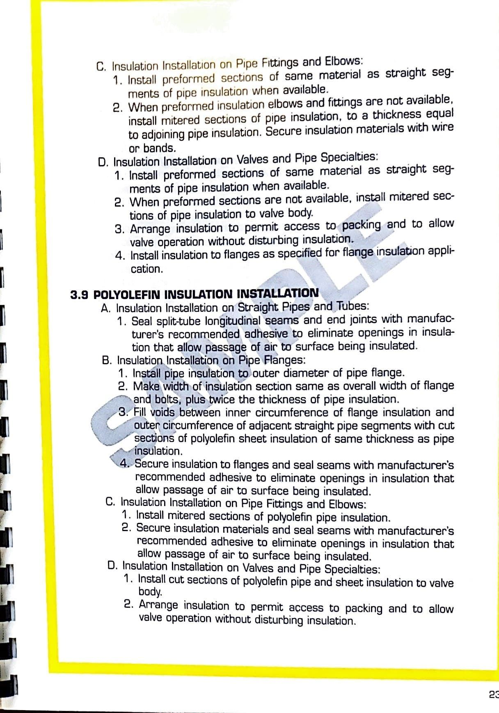
C.
D.
Insulation Installation on Pipe Fittings and Elbows: 1.
Install preformed sections of same material as straight seg- ments of Pipe Insulation when available.
2.
When preformed insulation elbows and fittings are not available, install mitered sections of Pipe insulation, to a thickness equal to adJ0ining pipe insulation.
Secure insulation materials With wire or bands.
Insulation Installation on Valves and Pipe Specialties: 1.
Install preformed sections of same material as straight seg- ments of pipe insulation when available.
2.
When preformed sections are not available, install mitered sec- tions of pipe insulation to valve body.
3.
Arrange insulation to permit access to packing and to allow valve operation without disturbing insulation.
4.
Install insulation to flanges as specified for flange insulabon appli- cation.
3.9 POLYOLEFIN INSULATION INSTALLATION A.
Insulation Installation on Straight Pipes and Tubes: 1.
Seal split-tube longitudinal seams and end joints with manufac- turer's recommended adhesive to eliminate openings in insula- tion that allow passage of air to surface being insulated.
B.
Insulation Installation on Pipe Flanges: 1.
Install pipe insulation Wouter diameter of pipe flange.
2.
Make width of insulation section same as overall Width of flange and bolts, plus twice the thickness of pipe insulation.
3.
Fill voids between inner circumference of flange insulation and outer circumference of adjacent straight pipe segments with cut sections of polyolefin sheet insulation of same thickness as pipe Insulation.
Secure insulation to flanges and seal seams with manufacturer's recommended adhesive to eliminate openings in insulation that allow passage of air to surface being insulated.
C.
Insulation Installation on Pipe Fittings and Elbows: 1.
Install mitered sections of polyolefin pipe insulation.
2.
Secure insulation materials and seal seams with manufacturer's recommended adhesive to eliminate openings in insulation that allow passage of air to surface being insulated.
D.
Insulation Installation on Valves and Pipe Specialties: 1.
Install cut sections of polyolefin pipe and sheet insulation to valve body.
2.
Arrange insulation to permit access to packlng and to allow valve operation without disturbing insulation.
Page 249
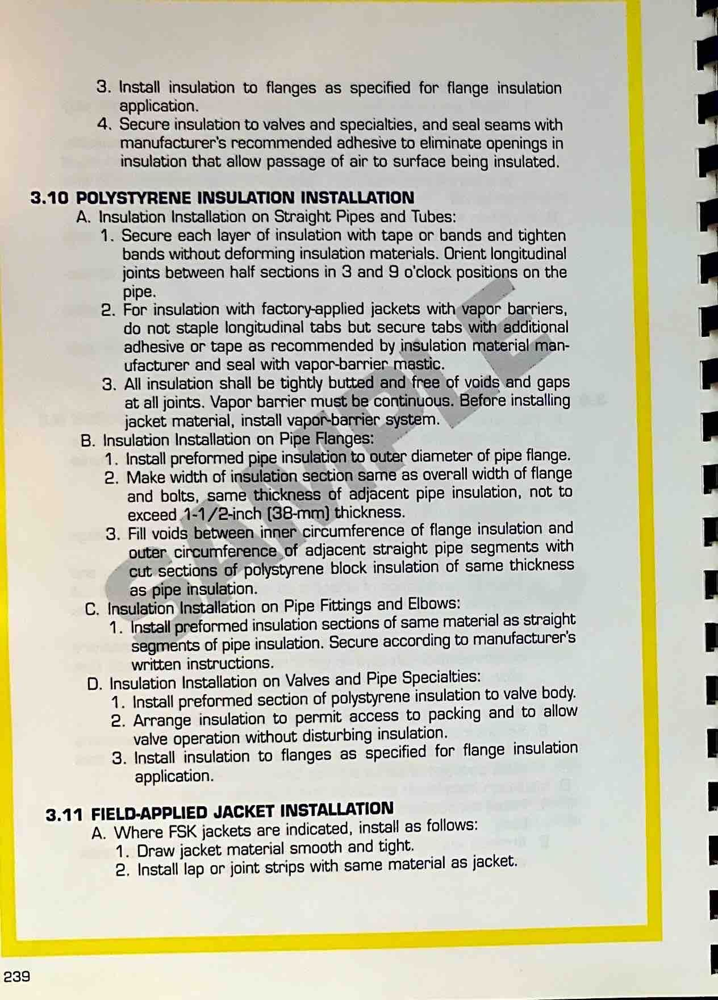
3.
Install insulation to flanges as specified for flange insulation application.
4.
Secure insulation to valves and specialties, and seal seams with manufacturer's recommended adhesive to eliminate openings in insulation that allow passage of air to surface being insulated.
3.10 POLYSTYRENE INSULATION INSTALLATION A.
Insulabon Installation on Straight Pipes and Tubes: I.
Secure each layer of insulation with tape or bands and tighten bands without deforming insulation materials.
Orient longitudinal joints between half sections in 8 and 9 0'clock positions on the pipe.
2.
For insulation with factory-applied jackets With Vapor barriers, do not staple longitudinal tabs but secure tabs with additional adhesive or tape as recommended by insulation material man- ufacturer and seal with vapor-barrier mastic.
3.
All insulation shall be tightly butted and free of voids and gaps at all joints.
Vapor barrier must be continuous.
Before installing jacket material, install vapor-barrier system.
B.
Insulation Installation on Pipe Flanges: 1.
Install preformed pipe insulation to outer diameter of pipe flange.
2.
Make width of insulation section same as overall width of flange and bolts, same ilickness of adjacent pipe insulation, not to exceed 1-1 /2-inch (38-mm) thickness.
3.
Fill voids between inner circumference of flange insulation and outer circumference of adjacent straight pipe segments with cut sections of potystyrene block insulation of same thickness as pipe insulation.
C.
Insulation Installation on Pipe Fittings and Elbows: 1.
Install preformed insulation sections of same material as straight segments of pipe insulation.
Secure according to manufacturer's writen instructions.
D.
Insulation Installation on Valves and Pipe Specialties: 1.
Install preformed section of polystyrene insulation to valve body.
2.
Arrange insulation to permit access to packing and to allow valve operation without disturbing insulation.
3.
Install insulation to flanges as specified for flange insulation application.
3.11 FIELD-APPLIED JACKET INSTALLATION A.
Where FSK jackets are indicated, install as follows: 1.
Draw jacket material smooth and tight.
2.
Install lap or joint strips with same material as jacket.
239
Page 250
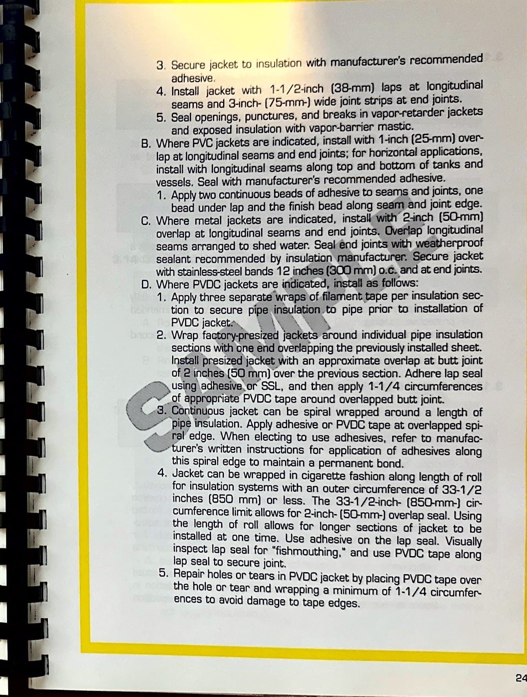
With manufactureNs recommended 3.
Secure jacket to Insulation adhesive.
4.
Install jacket With 1-1 /2-inch (3B-mm) laps at longitudinal seams and 3-tnch- (75-mm-) wide joint strips at end joints.
5.
Seal openings, punctures, and breaks in vapor-retarder jackets and exposed insulation with vapor-barrier mastic.
B.
Where PVC jackets are indicated, install With I-inch (25-mm) over- lap at longitudinal seams and end joints; for horizontal applications.
install with longitudinal seams along top and botom of tanks and vessels.
Seal with manufacturer's recommended adhesive.
1.
Apply two continuous beads of adhesive to seams and joints, one bead under lap and the finish bead along seam and joint edge.
Where metal jackets are indicated, install with' 2-inch (50-mm) C.
overlap at longitudinal seams and end joints.
Overlap longitudinal seams arranged to shed water.
Seal end joints with weatherproof sealant recommended by insulation manufacturer.
Secure jacket with stainless-steel bands 12 inches (300 mm) o.c- and at end joir&.
D.
Where PVDC jackets are indicated, install as follows: 1.
Apply three separate wraps of filament tape per insulation sec- tion to secure pi e insulation-to pipe prior to installation of PVDC 2.
Wrap factory-presred jackets around individual pipe insulation sections with one end overlapping the previously installed sheet.
Install presized jacket with an approximate overlap at butt joint of 2 inches (50 mm) over the previous section.
Adhere lap seal using adhesive or SSL, and then apply 1-1/4 circumferences of appropriate PVDC tape around overlapped but joint.
8.
Continuous jacket can be spiral wrapped around a length of pipe insulation.
Apply adhesive or PVDC tape at overlapped spi- ral edge.
When electing to use adhesives, refer to manufac- C turer's written instructions for application of adhesives along 4.
5.
this spiral edge to maintain a permanent bond.
Jacket can be wrapped in cigarette fashion along length of roll for insulation systems with an outer circumference of 33-1/2 inches (850 mm) or less.
The 33-1 /2-inch- (850mm) cir- cumference limit allows for 2-inch- (50mm-) overlap seal.
using the length of roll allows for longer sections of jacket to be installed at one times Use adhesive on the lap seal.
Visually inspect lap seal for "fishmouthing," and use PVDC tape along lap seal to secure joint.
Repair holes or tears in PVDC jacket by placing PVDC tape over the hole or tear and wrapping a minimum of 1-1/4 circumfer- ences to avoid damage to tape edges.
24
Page 251
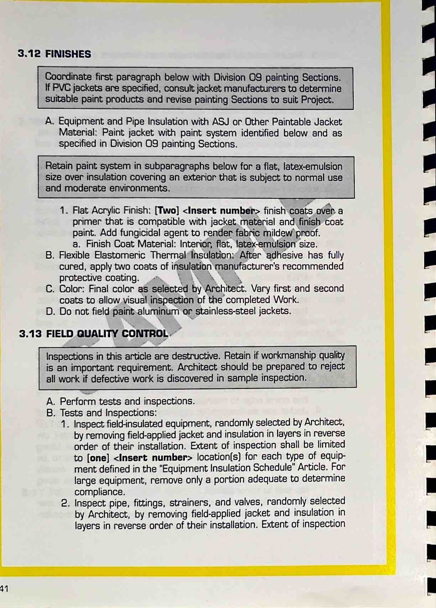
3.12 FINISHES Coordinate first paragraph below with Division 09 painting Sections.
If PVC jackets are specified, consult jacket manufacturers to determine suitable paint products and revise painting Sections to suit Project.
A.
Equipment and Pipe Insulation with ASJ or Other Paintable Jacket Material: Paint jacket with paint system identified below and as specified in Division 09 painting Sections.
Retain paint system in subparagraphs below for a flat.
latex-emulsion size over insulation covering an exterior that is subject to normal use and moderate environments.
1.
Flat Acrylic Finish: [Two] <lnsert number> finish coats over.
a primer that is compatible with jackermaterial and finish coat paint.
Add fungicidal agent to render fabric mildevfproof.
a.
finish Coat Material: Interior, flat, latex-emulsion size.
B.
Flexible Elastomeric Thermal •Insulation: After adhesive has fully cured, apply two coats of insulation anufacturer's recommended protective coating.
C.
Color: Final color as selected by Architect.
Vary first and second coats to allow visual inspection Of the' completed Work.
D.
Do not field paint aluminum or stainless-steel jackets.
3.13 FIELD QUALITY CONTROL Inspections in this a&cle are destructive.
Retain if workmanship quality is an important requirement.
Architect should be prepared to reject all work if defective work is discovered in sample inspection.
A.
Perform tests and inspections.
B.
Tests and Inspections: 1.
Inspect field-insulated equipment, randomly selected by Architect, by removing field-applied jacket and insulation in layers in reverse order of their installation.
Extent of inspection shall be limited to [one] <lnsert number> location(s) for each type of equip- ment defined in the "Equipment Insulation Schedule" Article.
For large equipment, remove only a portion adequate to determine compliance.
2.
Inspect pipe, fittings, strainers, and valves, randomly selected by Architect, by removing field-applied jacket and insulation in layers in reverse order of their installation.
Extent of inspection 41
Page 252
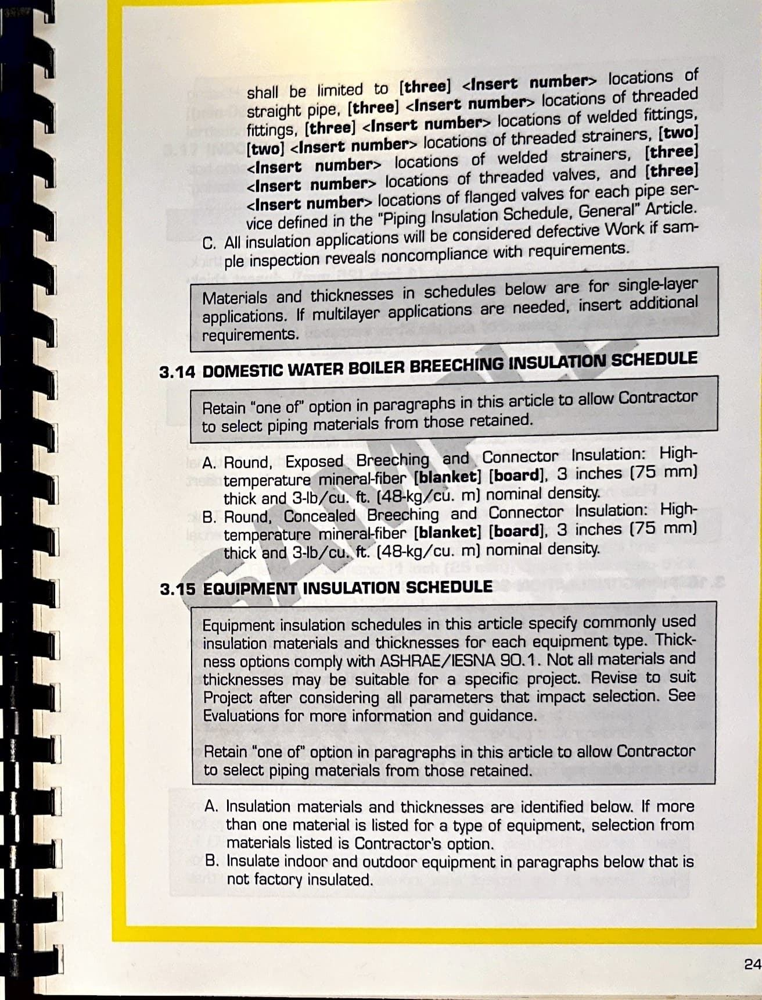
shall be limited to [three] <lnsert number> locations of straight pipe, [three) <lnsert number> locations of threaded fitings, [three] <lnsert number> locations of welded fittings, [two] <lnsert number> locations of threaded strainers, [twoJ <lnsert number> locations of welded strainers, [three] <lnsert number> locations of threaded valves, and [three] <lnsert number> locations of flanged valves for each pipe ser- vice defined in the "Piping Insulation Schedule, General" Article.
C.
All insulation applications will be considered defective Work if sam- ple inspection reveals noncompliance with requirements.
Materials and thicknesses in schedules below are for single-layer applications.
If multilayer applications are needed, insert additional requirements.
3.14 DOMESTIC WATER BOILER BREECHING INSULATION SCHEDULE Retain "one of" option in paragraphs in this article to allow Contractor to select piping materials from those retained.
A.
Round, Exposed Breeching and.
Connector Insulation: High- temperature mineral-fiber (blanketl [board], 3 inches (75 mm) thick and 3-1b/cu.
ft.
(48-kg/cÜ.
m) nominal density.
B.
Round, Concealed.
Breeching and Connector Insulation: High- temperature mineral-fiber [blanketl [board], 3 inches (75 mm) Kthick and 3-1b/cu ft.
(48-kg/cu.
m) nominal density.
3.15 EQUIPMENT INSULATION SCHEDULE Equipment insulation schedules in this article specify commonly used insulation materials and thicknesses for each equipment Wpe.
Thick- ness options comply with ASHRAE/IESNA 90.1.
Not all materials and thicknesses may be suitable for a specific project.
Revise to suit Project after considering all parameters that impact selection.
See Evaluations for more information and guidance.
Retain "one of" option in paragraphs in this article to allow Contractor to select piping materials from those retained.
A.
Insulation materials and thicknesses are identified below.
If more than one material is listed for a type of equipment, selection from materials listed is Contractor's option.
B.
Insulate indoor and outdoor equipment in paragraphs below that is not factory insulated.
2
Page 253
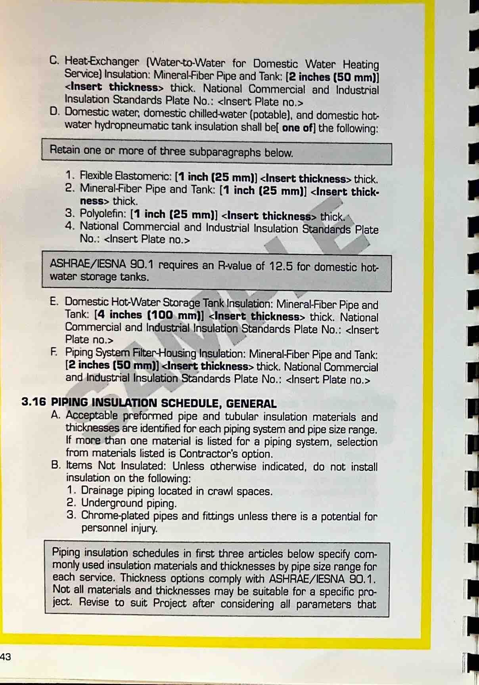
C.
Heat-Exchanger (Water-to-Water for Domestic Water Heating Service) Insulation: Mineral-Fiber Pipe and Tank: [2 inches (50 mm)] <lnsert thickness> thick.
National Commercial and Industrial Insulabon Standards Plate No.: <lnsert Plate no.> D.
Domestic water, domestic chilledAMater (potable), and domestic hot- water hydropneumauc tank insulation shall bet one ofl the following: Retain one or more of three subparagraphs below.
1.
Flexible Elastomeric: [1 inch (25 mm)) <lnsert thickness> thick.
2.
Mineral-Fiber Pipe and Tank: (1 inch (25 mm)] <lnsert thick• ness> thick.
3.
Polyolefin: [1 inch (25 mm)] <lnsert thickness> thicko.
4.
National Commercial and Industrial Insulation Standards Plate No.: <lnsert Plate no.> ASHRAE/IESNA 90.1 requires an R-value of 12.5 for domestic hot- water storage tanks.
E.
Domestic Hot-Water Storage Tank Insulation: Mineral-fiber Pipe and Tank: [4 inches (100 mm)] <lnsert thickness> thick.
National Commercial and Industrial Insulation Standards Plate No.: <lnsert Plate no.> F.
Piping System filter-Housing Insulation: Mineral-Fiber Pipe and Tank: [2 inches (50 mm)) <lnsert thickness> thick.
National Commercial and Industrial Insulation Standards Plate No.: <lnsert Plate no.> 3.1B PIPING INSULATION SCHEDULE, GENERAL A.
Acceptable preformed pipe and tubular insulation materials and thicknesses are identified for each piping system and pipe size range.
If more than one material is listed for a piping system, selection from materials listed is Contractor's option.
B.
Items Not Insulated: Unless otherwise indicated, do not install insulation on the following: 1.
Drainage piping located in crawl spaces.
2.
LJnderground piping.
a.
Chrome-plated pipes and fittings unless there is a potential for personnel injury.
Piping insulation schedules in first three articles below specify com- monly used insulation materials and thicknesses by pipe size range for each service.
Thickness options comply with ASHRAE/IESNA 90.1.
Not all materials and thicknesses may be suitable for a specific pro- ject.
Revise to suit Project after considering all parameters that 43
Page 254
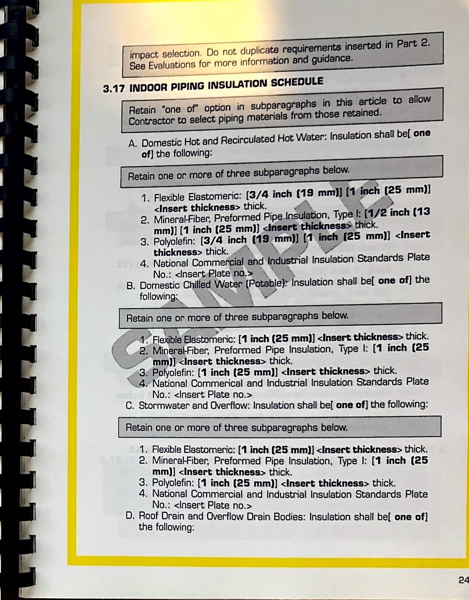
impact selection.
Do not duplicate requirements inserted in Part 2.
See Evaluations for more Information and guidance.
3.17 INDOOR PIPING INSULATION SCHEDULE Retain "one of" option in subparagraphs in this article to allow Contractor to select piping materials from those retained.
A.
Domestic Hot and Recirculated Hot Water: Insulation shall one of] the following: Retain one or more of three subparagraphs below.
1.
Flexible Elastomeric: [3/4 inch (19 mm)] [1 inch (25 mm)) <lnsert thickness> thick.
2.
Mineral-Fiber, Preformed Pipe Insulation, Type I: [1/2 inch (13 mm)] [1 inch (25 mm)] <lnsert thickness> thick.
3.
Polyolefin: [3/4 inch (19 mm)] [1 inch (25 mm)] <lnsert thickness> thick.
4.
National Commercial and Industrial Insulation Standards Plate No.: <lnsert Plate no.> B.
Domestic Chilled Water (Potable)r Insulation shall bet one of] the following Retain one or more of three subparagraphs below.
1• Flexible Elastomeric: [1 inch (25 mm)] <lnsert thickness> thick.
•2.
Mineral-Fiber, Preformed Pipe Insulation, Type l: [1 inch (25 thickness> thick.
3.
Polyolefin: [1 inch (25 mm)] <lnsert thickness> thick.
4m National Commerical and Industrial Insulation Standards Plate No.: <lnsert Plate no.> C.
Stormwater and Overflow: Insulation shall be[ one ofl the following: Retain one or more of three subparagraphs below.
D.
1.
Flexible Elastomeric: [1 inch (25 mm)] <lnsert thickness> thick.
2.
Mineral-Fiber, Preformed Pipe Insulation, Type l: [1 inch (25 mm)] <lnsert thickness> thick.
3.
Polyolefin: [1 inch (25 mm)] <lnsert thickness> thick.
4.
National Commercial and Industrial Insulation Standards Plate No.: <lnsert Plate no.> Roof Drain and Overflow Drain Bodies: Insulation shall be[ one of] the following: 24
Page 255
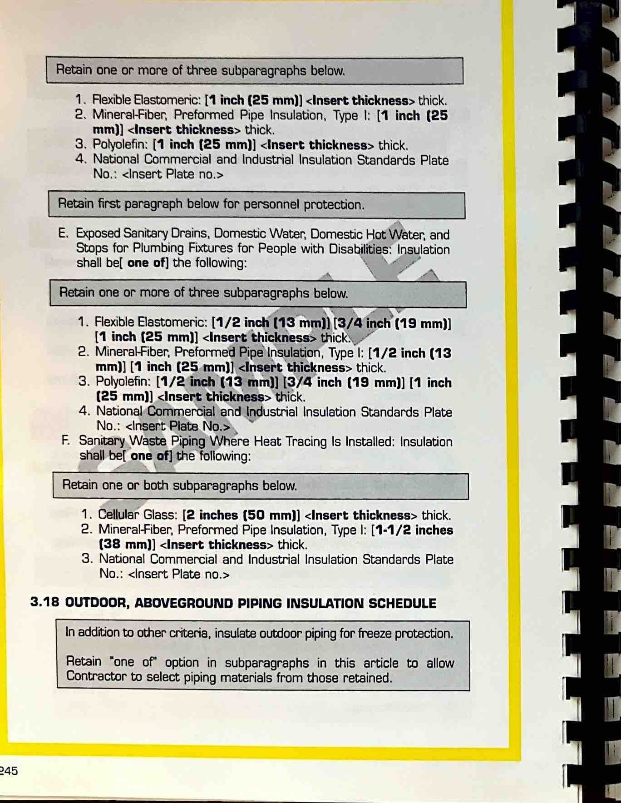
Retain one or more of three subparagraphs below, 1.
Flexible Elastomeric: [1 inch (25 mm)) <lnsert thickness> thick.
2, Mineral-fiber, Preformed Pipe Insulation, Type l: II inch (25 mm)) <lnsert thickness> thick.
3.
Polyolefin: [1 inch (25 mm)) <lnsert thickness> thick.
4.
National Commercial and Industrial Insulation Standards Plate No.: <lnsert Plate no.> Retain first paragraph below for personnel protection.
E.
Exposed Sanitary Drains, Domestic Water, Domestic Hot Water, and Stops for Plumbing Fixtures for People with Disabilities: Insulation shall bel one of] the following: Retain one or more of three subparagraphs below.
1.
Flexible Elastomeric: (1/2 inch (13 mm)) (3/4 inch (19 mm)] [1 inch (25 mm)) <lnserc thickness> thick.
2.
Mineral-fiber, Preformed Pipe' Insulation, Type l: [1/2 inch (13 mm)] [1 inch (25 mm)] <lnsert thickness> thick.
3.
Polyolefin: 11/2 inch (13 mm)) [3/4 inch (19 mm)) [1 inch (25 mm)] <lnsert thickness> thick.
4.
National Commercial and Industrial Insulation Standards Plate No.: <lnsert Plate No.>s F.
Sanitary Waste Piping Where Heat Tracing Is Installed: Insulation shall one ofl Vie following: Retain one or both subparagraphs below.
1.
Cellular Glass: [2 inches (50 mm)) <lnsert thickness> thick.
2.
Mineral-Fiber, Preformed Pipe Insulation, Type l: [1-1/2 inches (38 mm)] <lnsert thickness> thick.
8.
National Commercial and Industrial Insulation Standards Plate No.: <lnsert Plate no.> 3.18 OUTDOOR, ABOVEGROUND PIPING INSULATION SCHEDULE In addition to off-ler criteria, insulate outdoor piping for freeze protection.
Retain gone of" option in subparagraphs in this article to allow Contractor to select piping materials from those retained.
245 II
Page 256
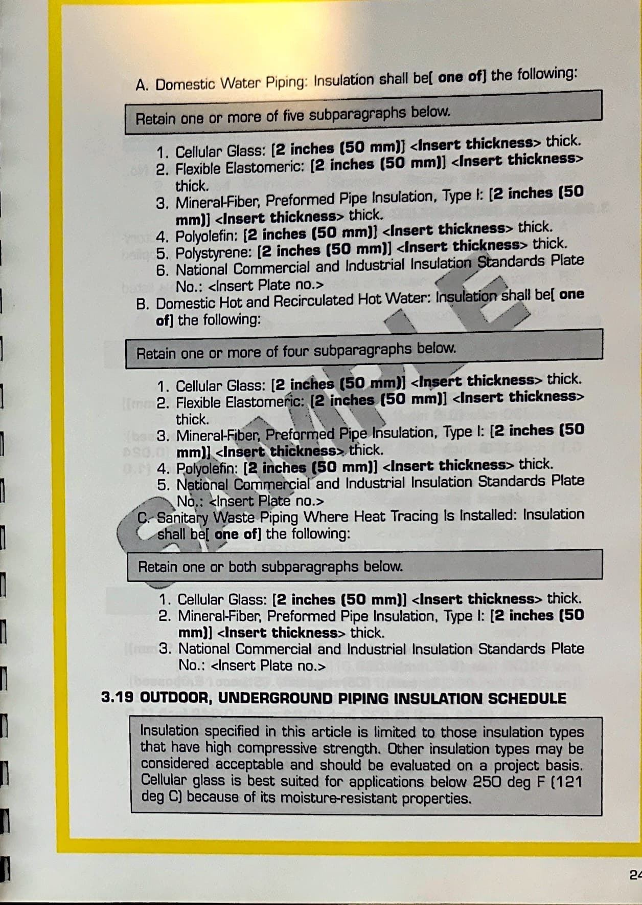
A.
Domestic Water Piping: Insulation shall one of] the following: Retain one or more of five subparagraphs below.
1.
Cellular Glass: [2 inches (50 mm)] <lnsert thickness> thick.
2.
Flexible Elastomeric: [2 inches (50 mm)) <lnsert thickness> thick.
3.
Mineral-fiber, Preformed Pipe Insulation, Type f: [2 inches (50 mm)) <lnsert thickness> thick.
4.
Polyolefin: [2 inches (50 mm)) <lnsert thickness> thick.
5.
Polystyrene: [2 inches (50 mm)] <lnsert thickness> thick.
6.
National Commercial and Industrial Insulation %ndards Plate No.: <lnsert Plate no.> B.
Domestic Hot and Recirculated Hot Water: Insulation shall one of] the following: Retain one or more of four subparagraphs below.
1.
Cellular Glass: [2 inches (50 mm)] <lnsert thickness> thick.
2.
Flexible Elastomeftc: [2 inches (50 mm)] <lnsert thickness> thick.
a.
Mineral-Fiber, Preformed Pipe Insulation, Type l: [2 inches (50 thickness»thick.
4.
Rolyolefin: [2 inches (50 mm)] <lnsert thickness> thick.
5.
National Commerciarand Industrial Insulation Standards Plate Nb:.• klnsert Plate-no.> C-Sanitary Waste Piping Where Heat Tracing Is Installed: Insulation C—shall one of] the following: Retain one or both subparagraphs below.
1.
Cellular Glass: [2 inches (50 mm)] <lnsert thickness> thick.
2.
Mineral-Fiber.
Preformed Pipe Insulation, Type l: [2 inches (50 mm)) <lnsert thickness> thick.
a.
National Commercial and Industrial Insulation Standards Plate No.: <lnsert Plate no.> 3.19 OUTDOOR, UNDERGROUND PIPING INSULATION SCHEDULE Insulation specified in this article is limited to those insulation types that have high compressive strength.
Other insulation types may be considered acceptable and should be evaluated on a project basis.
Cellular glass is best suited for applications below 250 deg F (121 deg C) because of its moisture-resistant properties.
2
Page 257
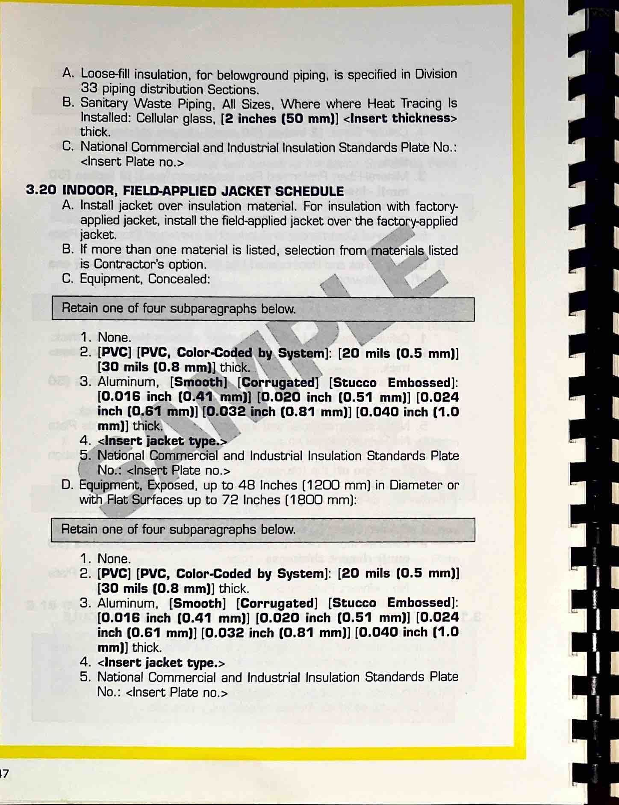
A.
Loose-fill insulation.
for belowground piping, is specified in Division 83 piping distribution Sections.
B.
Sanitary Waste Piping, All Sizes, Where where Heat Tracing Is Installed: Cellular glass, [2 inches (50 mm)] <lnsert thickness> thick.
C.
National Commercial and Industrial Insulation Standards Plate No..
<lnsert Plate no.> 3.20 INDOOR, FIELD-APPLIED JACKET SCHEDULE A.
Install jacket over insulation material.
For insulation with factory- applied jacket, install the field-applied jacket over the factory-applied jacket.
B.
If more than one material is listed, selection from materials listed is Contractor's option.
C.
Equipment, Concealed: Retain one of four subparagraphs below.
1.
None.
2.
[PVCI [PVC, Color-coded by System]: [20 mils (0.5 mm)] [30 mils (0.8 mm)] thick.
a.
Aluminum, [Smooth] [Corrugated] [Stucco Embossed]: [0.016 inch (0.41 rnm)l [0.020 inch (0.51 mm)] [0.024 inch (0.61 mm)] [0.032 inch (0.81 mm)] [0.040 inch (1.0 mm)] thick.
4.
<lnsert jacket type.
5.
National Commercial and Industrial Insulation Standards Plate No..
<lnsert Plate no.> D.
Equipment, Exposed, up to 48 Inches (1200 mm) in Diameter or with Flat Surfaces up to 72 Inches (1800 mm): Retain one of four subparagraphs below.
1.
None.
2.
[PVC] [PVC, Color-coded by System]: [20 mils (0.5 mm)] [30 mils (0.8 mm)] thick.
3.
Aluminum, [Smooth] [Corrugated] [Stucco Embossed]: [0.01B inch (0.41 mm)] [0.020 inch (0.51 mm)] [0.024 inch (0.61 mm)] [0.032 inch (0.81 mm)] [0.040 inch (1.0 mm)] thick.
4.
<lnsert jacket type.> 5.
National Commercial and Industrial Insulation Standards Plate No.: <lnsert Plate no.>
Page 258
E.
Equipment, Exposed, Larger Than 48 Inches (1200 mm) in Diameter or with Flat Surfaces Larger Than 72 Inches (1800 mm): Retain one of three subparagraphs below.
1.
None, 2.
[Painted ]Aluminum, [Smooth] [Stucco Embossed] with [1-1/4-lnch- (32-mm-) Deep Corrugations] [2-1/2•Inch- (65•mm-) Deep Corrugations] [4-by-l•lnch (100-by•25-mm) Box Ribs]: [0.032 inch (0.81 mm)] thick.
3.
<lnsert jacket type.> 4.
National Commercial and Industrial Insulation Standards Plate No.: <lnsert Plate no.> F.
Piping, Concealed: Retain one of four subparagraphs below.
1.
None.
2.
[PVC] [PVC, Color-coded by System]: [20 mils (0.5 mm)] [30 mils (0.8 mm)] thick.
3.
Aluminum, (Smooth] [Corrugated] [Stucco Embossed]: [0.016 inch (0.41 mm)] [0.020 inch (0.51 mm)] [0.024 inch (0.61 mm)] [0.032 inch (0.81 mm)] [0.040 inch (1.0 mm)] thick.
4.
<lnsert jacket type.> 5; National Commercial and Industrial Insulation Standards Plate No.; <lnsert Plate no.> G.
Piping, Exposed: Retain one of four subparagraphs below.
1 None.
2.
[PVC] [PVC, Color-coded by System]: [20 mils (0.5 mm)] [30 mils (0.8 mm)] thick.
8.
Aluminum, [Smooth] [Corrugated] [Stucco Embossed]: [0.016 inch (0.41 mm)] [0.020 inch (0.51 mm)] [0.024 inch (0.61 mm)] [0.032 inch (0.81 mm)] [0.040 inch (1.0 mm)] thick.
4.
<lnsert jacket type.> 5.
National Commercial and Industrial Insulation Standards Plate No.: <lnsert Plate no.> 24
Page 259
3.21 OUTDOOR, FIELD-APPLIED JACKET SCHEDULE A.
Install jacket over insulation material.
For insulation with factory- applied jacket.
install the field-applied jacket over the factory-applied jacket, B.
If more than one material is listed.
selection from materials listed is Contractor's option.
C.
Equipment, Concealed: Retain one of four subparagraphs below 1.
None.
2.
[PVC) [PVC, ColorC0ded by System): [20 mils to.5 mm)) [30 mils (0.8 mm)) thick.
3.
Aluminum, (Smooth) [Corrugated] [Stucco Embossed]: [0.016 inch (0.41 mm)] [0.020 inch (0.51 mm)) 10.024 inch (0.61 mm)) [0.032 inch (0.81 mm)) [0.040 inch (1.0 mm)) thick.
4.
<lnsert jacket type.> 5.
National Commercial and fhdustnal Insulation Standards Plate No.: <lnsert Plate no.>f4 D.
Equipment, Exposed, up to 48 Inches (1200 mm) in Diameter or With Flat Surfaces up to 72 Inches (1800 mm): Retain one or both subparagraphs below.
1.
[Painted IAIuminum, [Smooth] [Corrugated) [Stucco Embossed) [with Z-Shaped Locking Seam]: [0.016 inch (0.41 mm)) 10.020 inch (0.51 [0.024 inch (0.61 mm)) [0.032 inch (0.81 mm)) thick.
2.
<lnsert jacket type.> 3.
National Commercial and Industrial Insulation Standards Plate No.: <lnsert Plate no.> E.
Equipment, Exposed, Larger Than 48 Inches (1200 mm) in Diameter or with Flat Surfaces Larger Than 72 Inches (1800 mm): Retain one or both subparagraphs below.
I.
[Painted ]Aluminum, [Smooth] [Stucco Embossed] with [1-1 /4•Inch- (32-mm-) Deep Corrugations] [2-1/2-lnch• (65-mm•) Deep Corrugations] [4-by•l.lnch (100-by-25-mm) Box Ribs]: [0.032 inch (0.81 mm)] thick, 2.
<lnsert jacket type.> 3.
National Commercial and Industrial Insulation Standards Plate No.: <lnsert Plate no.> 49
Page 260
F.
Piping, Concealed.
Retajn one of four subparagraphs belom 1, None.
2.
[PVCJ [PVC, Colorcoded by System]: (20 mi's (0.5 mm)) (30 mils (0.8 mm)J thick.
3.
Aluminum, [Smooth] (Corrugated] (Stucco Embossed]: [0.01B inch (0.41 [0.020 (0.51 mm)) [0.024 inch (0.61 [0.032 inch (0.81 mm)) [0.040 inch (1.0 mm)) thick.
4.
<lnsert jacket type.> 5.
National Commercial and Industrial InsulatioWStandards Plate No.: <lnsert Plate no.> G.
Piping, Exposed: Retain one of three subparagraphs below.
1.
pvc: [20 mils (0.5 mm)] tao [40 mils (1.0 mm)) thick.
2.
[Painted IAIuminum.
[Smooth] [Corrugated] [Stucco Embossed] (with Z-Shaped-L'ocking Seam]: [0.016 inch (0.41 (0.51 mm)) [0.024 inch (0.61 mm)] [0.032 inch (0.81 mm)) thick.
3.
<lnsert jacket type.> National Commercial and Industrial Insulation Standards Plate No:; <lnsert Plate no.> 3.22 UNDERGROUND, FIELD-INSTALLED INSULATION JACKET For underground direct-buried piping applicaåons, insäll underground irect-buried jacket over insulation material.
END OF SECTION 220700 2